000 appleりんごretain
000 appleりんごretain実画像と英語・日本語・例文を照合。主要な物・動作・語義が一致。抽象語は正確な説明図として維持。
822語＋155表現。語彙61件を改善、画像なし155表現を補完、761件は維持。15セット240コマ生成、216枚採用。画像は英文と併用する場面補助。左右は変更前→採用画像。基準 d80675a。
000 appleりんごretain実画像と英語・日本語・例文を照合。主要な物・動作・語義が一致。抽象語は正確な説明図として維持。
 001 bananaバナナretain
001 bananaバナナretain実画像と英語・日本語・例文を照合。主要な物・動作・語義が一致。抽象語は正確な説明図として維持。
 002 orangeオレンジ（果物）retain
002 orangeオレンジ（果物）retain実画像と英語・日本語・例文を照合。主要な物・動作・語義が一致。抽象語は正確な説明図として維持。
 003 breadパンretain
003 breadパンretain実画像と英語・日本語・例文を照合。主要な物・動作・語義が一致。抽象語は正確な説明図として維持。
 004 riceご飯retain
004 riceご飯retain実画像と英語・日本語・例文を照合。主要な物・動作・語義が一致。抽象語は正確な説明図として維持。
 005 milk牛乳retain
005 milk牛乳retain実画像と英語・日本語・例文を照合。主要な物・動作・語義が一致。抽象語は正確な説明図として維持。
 006 water水retain
006 water水retain実画像と英語・日本語・例文を照合。主要な物・動作・語義が一致。抽象語は正確な説明図として維持。
 007 egg卵retain
007 egg卵retain実画像と英語・日本語・例文を照合。主要な物・動作・語義が一致。抽象語は正確な説明図として維持。
 008 cakeケーキretain
008 cakeケーキretain実画像と英語・日本語・例文を照合。主要な物・動作・語義が一致。抽象語は正確な説明図として維持。
 009 fish魚retain
009 fish魚retain実画像と英語・日本語・例文を照合。主要な物・動作・語義が一致。抽象語は正確な説明図として維持。
 010 dog犬retain
010 dog犬retain実画像と英語・日本語・例文を照合。主要な物・動作・語義が一致。抽象語は正確な説明図として維持。
 011 cat猫retain
011 cat猫retain実画像と英語・日本語・例文を照合。主要な物・動作・語義が一致。抽象語は正確な説明図として維持。
 012 bird鳥retain
012 bird鳥retain実画像と英語・日本語・例文を照合。主要な物・動作・語義が一致。抽象語は正確な説明図として維持。
 013 rabbitうさぎretain
013 rabbitうさぎretain実画像と英語・日本語・例文を照合。主要な物・動作・語義が一致。抽象語は正確な説明図として維持。
 014 horse馬retain
014 horse馬retain実画像と英語・日本語・例文を照合。主要な物・動作・語義が一致。抽象語は正確な説明図として維持。
 015 cow牛retain
015 cow牛retain実画像と英語・日本語・例文を照合。主要な物・動作・語義が一致。抽象語は正確な説明図として維持。
 016 pig豚retain
016 pig豚retain実画像と英語・日本語・例文を照合。主要な物・動作・語義が一致。抽象語は正確な説明図として維持。
 017 elephant象retain
017 elephant象retain実画像と英語・日本語・例文を照合。主要な物・動作・語義が一致。抽象語は正確な説明図として維持。
 018 lionライオンretain
018 lionライオンretain実画像と英語・日本語・例文を照合。主要な物・動作・語義が一致。抽象語は正確な説明図として維持。
 019 monkey猿retain
019 monkey猿retain実画像と英語・日本語・例文を照合。主要な物・動作・語義が一致。抽象語は正確な説明図として維持。
 020 book本retain
020 book本retain実画像と英語・日本語・例文を照合。主要な物・動作・語義が一致。抽象語は正確な説明図として維持。
 021 penペンretain
021 penペンretain実画像と英語・日本語・例文を照合。主要な物・動作・語義が一致。抽象語は正確な説明図として維持。
 022 pencil鉛筆retain
022 pencil鉛筆retain実画像と英語・日本語・例文を照合。主要な物・動作・語義が一致。抽象語は正確な説明図として維持。
 023 desk机retain
023 desk机retain実画像と英語・日本語・例文を照合。主要な物・動作・語義が一致。抽象語は正確な説明図として維持。
 024 chair椅子retain
024 chair椅子retain実画像と英語・日本語・例文を照合。主要な物・動作・語義が一致。抽象語は正確な説明図として維持。
 025 bagかばんretain
025 bagかばんretain実画像と英語・日本語・例文を照合。主要な物・動作・語義が一致。抽象語は正確な説明図として維持。
 026 school学校retain
026 school学校retain実画像と英語・日本語・例文を照合。主要な物・動作・語義が一致。抽象語は正確な説明図として維持。
 027 teacher先生retain
027 teacher先生retain実画像と英語・日本語・例文を照合。主要な物・動作・語義が一致。抽象語は正確な説明図として維持。
 028 student生徒retain
028 student生徒retain実画像と英語・日本語・例文を照合。主要な物・動作・語義が一致。抽象語は正確な説明図として維持。
 029 English英語retain
029 English英語retain実画像と英語・日本語・例文を照合。主要な物・動作・語義が一致。抽象語は正確な説明図として維持。
 030 mother母retain
030 mother母retain実画像と英語・日本語・例文を照合。主要な物・動作・語義が一致。抽象語は正確な説明図として維持。
 031 father父retain
031 father父retain実画像と英語・日本語・例文を照合。主要な物・動作・語義が一致。抽象語は正確な説明図として維持。

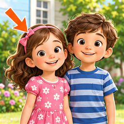
032 sister姉・妹replaced姉妹の男女2人を同列に描き、sisterの対象が不明。女のきょうだい1人を明示。

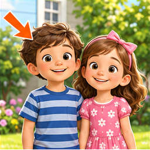
033 brother兄・弟replaced兄弟姉妹の関係図で、brotherの男のきょうだい1人が明示されない。
 034 grandmother祖母retain
034 grandmother祖母retain実画像と英語・日本語・例文を照合。主要な物・動作・語義が一致。抽象語は正確な説明図として維持。
 035 grandfather祖父retain
035 grandfather祖父retain実画像と英語・日本語・例文を照合。主要な物・動作・語義が一致。抽象語は正確な説明図として維持。
 036 friend友達retain
036 friend友達retain実画像と英語・日本語・例文を照合。主要な物・動作・語義が一致。抽象語は正確な説明図として維持。
 037 family家族retain
037 family家族retain実画像と英語・日本語・例文を照合。主要な物・動作・語義が一致。抽象語は正確な説明図として維持。
 038 boy男の子retain
038 boy男の子retain実画像と英語・日本語・例文を照合。主要な物・動作・語義が一致。抽象語は正確な説明図として維持。
 039 girl女の子retain
039 girl女の子retain実画像と英語・日本語・例文を照合。主要な物・動作・語義が一致。抽象語は正確な説明図として維持。
 040 red赤いretain
040 red赤いretain実画像と英語・日本語・例文を照合。主要な物・動作・語義が一致。抽象語は正確な説明図として維持。
 041 blue青いretain
041 blue青いretain実画像と英語・日本語・例文を照合。主要な物・動作・語義が一致。抽象語は正確な説明図として維持。
 042 green緑色のretain
042 green緑色のretain実画像と英語・日本語・例文を照合。主要な物・動作・語義が一致。抽象語は正確な説明図として維持。
 043 yellow黄色いretain
043 yellow黄色いretain実画像と英語・日本語・例文を照合。主要な物・動作・語義が一致。抽象語は正確な説明図として維持。
 044 white白いretain
044 white白いretain実画像と英語・日本語・例文を照合。主要な物・動作・語義が一致。抽象語は正確な説明図として維持。
 045 black黒いretain
045 black黒いretain実画像と英語・日本語・例文を照合。主要な物・動作・語義が一致。抽象語は正確な説明図として維持。
 046 big大きいretain
046 big大きいretain実画像と英語・日本語・例文を照合。主要な物・動作・語義が一致。抽象語は正確な説明図として維持。

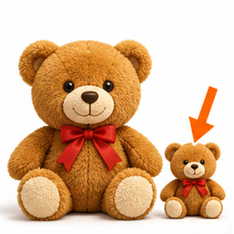
047 small小さいreplaced大小の四角があるだけで、smallの対象が指定されない。
 048 happyうれしいretain
048 happyうれしいretain実画像と英語・日本語・例文を照合。主要な物・動作・語義が一致。抽象語は正確な説明図として維持。
 049 hungryおなかがすいているretain
049 hungryおなかがすいているretain実画像と英語・日本語・例文を照合。主要な物・動作・語義が一致。抽象語は正確な説明図として維持。
 050 eat食べるretain
050 eat食べるretain実画像と英語・日本語・例文を照合。主要な物・動作・語義が一致。抽象語は正確な説明図として維持。
 051 drink飲むretain
051 drink飲むretain実画像と英語・日本語・例文を照合。主要な物・動作・語義が一致。抽象語は正確な説明図として維持。
 052 play遊ぶ・スポーツをするretain
052 play遊ぶ・スポーツをするretain実画像と英語・日本語・例文を照合。主要な物・動作・語義が一致。抽象語は正確な説明図として維持。
 053 read読むretain
053 read読むretain実画像と英語・日本語・例文を照合。主要な物・動作・語義が一致。抽象語は正確な説明図として維持。
 054 write書くretain
054 write書くretain実画像と英語・日本語・例文を照合。主要な物・動作・語義が一致。抽象語は正確な説明図として維持。
 055 run走るretain
055 run走るretain実画像と英語・日本語・例文を照合。主要な物・動作・語義が一致。抽象語は正確な説明図として維持。
 056 swim泳ぐretain
056 swim泳ぐretain実画像と英語・日本語・例文を照合。主要な物・動作・語義が一致。抽象語は正確な説明図として維持。
 057 sing歌うretain
057 sing歌うretain実画像と英語・日本語・例文を照合。主要な物・動作・語義が一致。抽象語は正確な説明図として維持。
 058 dance踊るretain
058 dance踊るretain実画像と英語・日本語・例文を照合。主要な物・動作・語義が一致。抽象語は正確な説明図として維持。
 059 study勉強するretain
059 study勉強するretain実画像と英語・日本語・例文を照合。主要な物・動作・語義が一致。抽象語は正確な説明図として維持。
 060 house家（建物）retain
060 house家（建物）retain実画像と英語・日本語・例文を照合。主要な物・動作・語義が一致。抽象語は正確な説明図として維持。
 061 park公園retain
061 park公園retain実画像と英語・日本語・例文を照合。主要な物・動作・語義が一致。抽象語は正確な説明図として維持。
 062 library図書館retain
062 library図書館retain実画像と英語・日本語・例文を照合。主要な物・動作・語義が一致。抽象語は正確な説明図として維持。
 063 station駅retain
063 station駅retain実画像と英語・日本語・例文を照合。主要な物・動作・語義が一致。抽象語は正確な説明図として維持。
 064 hospital病院retain
064 hospital病院retain実画像と英語・日本語・例文を照合。主要な物・動作・語義が一致。抽象語は正確な説明図として維持。
 065 room部屋retain
065 room部屋retain実画像と英語・日本語・例文を照合。主要な物・動作・語義が一致。抽象語は正確な説明図として維持。
 066 doorドアretain
066 doorドアretain実画像と英語・日本語・例文を照合。主要な物・動作・語義が一致。抽象語は正確な説明図として維持。
 067 window窓retain
067 window窓retain実画像と英語・日本語・例文を照合。主要な物・動作・語義が一致。抽象語は正確な説明図として維持。
 068 car自動車retain
068 car自動車retain実画像と英語・日本語・例文を照合。主要な物・動作・語義が一致。抽象語は正確な説明図として維持。
 069 busバスretain
069 busバスretain実画像と英語・日本語・例文を照合。主要な物・動作・語義が一致。抽象語は正確な説明図として維持。

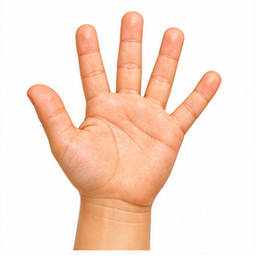
070 hand手replacedハイタッチの場面で、handより挨拶や動作が主題。
 071 head頭retain
071 head頭retain実画像と英語・日本語・例文を照合。主要な物・動作・語義が一致。抽象語は正確な説明図として維持。
 072 eye目retain
072 eye目retain実画像と英語・日本語・例文を照合。主要な物・動作・語義が一致。抽象語は正確な説明図として維持。
 073 ear耳retain
073 ear耳retain実画像と英語・日本語・例文を照合。主要な物・動作・語義が一致。抽象語は正確な説明図として維持。
 074 nose鼻retain
074 nose鼻retain実画像と英語・日本語・例文を照合。主要な物・動作・語義が一致。抽象語は正確な説明図として維持。
 075 mouth口retain
075 mouth口retain実画像と英語・日本語・例文を照合。主要な物・動作・語義が一致。抽象語は正確な説明図として維持。
 076 hat帽子retain
076 hat帽子retain実画像と英語・日本語・例文を照合。主要な物・動作・語義が一致。抽象語は正確な説明図として維持。
 077 shirtシャツretain
077 shirtシャツretain実画像と英語・日本語・例文を照合。主要な物・動作・語義が一致。抽象語は正確な説明図として維持。

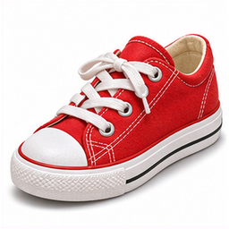
078 shoe靴（片方）replaced片方のshoeなのに2足分（左右一足）の靴がある。
 079 coatコートretain
079 coatコートretain実画像と英語・日本語・例文を照合。主要な物・動作・語義が一致。抽象語は正確な説明図として維持。
 080 one1（ひとつ）retain
080 one1（ひとつ）retain実画像と英語・日本語・例文を照合。主要な物・動作・語義が一致。抽象語は正確な説明図として維持。
 081 two2（ふたつ）retain
081 two2（ふたつ）retain実画像と英語・日本語・例文を照合。主要な物・動作・語義が一致。抽象語は正確な説明図として維持。
 082 three3（みっつ）retain
082 three3（みっつ）retain実画像と英語・日本語・例文を照合。主要な物・動作・語義が一致。抽象語は正確な説明図として維持。
 083 four4（よっつ）retain
083 four4（よっつ）retain実画像と英語・日本語・例文を照合。主要な物・動作・語義が一致。抽象語は正確な説明図として維持。
 084 five5（いつつ）retain
084 five5（いつつ）retain実画像と英語・日本語・例文を照合。主要な物・動作・語義が一致。抽象語は正確な説明図として維持。
 085 six6（むっつ）retain
085 six6（むっつ）retain実画像と英語・日本語・例文を照合。主要な物・動作・語義が一致。抽象語は正確な説明図として維持。
 086 seven7（ななつ）retain
086 seven7（ななつ）retain実画像と英語・日本語・例文を照合。主要な物・動作・語義が一致。抽象語は正確な説明図として維持。
 087 eight8（やっつ）retain
087 eight8（やっつ）retain実画像と英語・日本語・例文を照合。主要な物・動作・語義が一致。抽象語は正確な説明図として維持。
 088 nine9（ここのつ）retain
088 nine9（ここのつ）retain実画像と英語・日本語・例文を照合。主要な物・動作・語義が一致。抽象語は正確な説明図として維持。
 089 ten10（とお）retain
089 ten10（とお）retain実画像と英語・日本語・例文を照合。主要な物・動作・語義が一致。抽象語は正確な説明図として維持。
 090 Monday月曜日retain
090 Monday月曜日retain実画像と英語・日本語・例文を照合。主要な物・動作・語義が一致。抽象語は正確な説明図として維持。
 091 Tuesday火曜日retain
091 Tuesday火曜日retain実画像と英語・日本語・例文を照合。主要な物・動作・語義が一致。抽象語は正確な説明図として維持。
 092 Wednesday水曜日retain
092 Wednesday水曜日retain実画像と英語・日本語・例文を照合。主要な物・動作・語義が一致。抽象語は正確な説明図として維持。
 093 Thursday木曜日retain
093 Thursday木曜日retain実画像と英語・日本語・例文を照合。主要な物・動作・語義が一致。抽象語は正確な説明図として維持。
 094 Friday金曜日retain
094 Friday金曜日retain実画像と英語・日本語・例文を照合。主要な物・動作・語義が一致。抽象語は正確な説明図として維持。
 095 Saturday土曜日retain
095 Saturday土曜日retain実画像と英語・日本語・例文を照合。主要な物・動作・語義が一致。抽象語は正確な説明図として維持。
 096 Sunday日曜日retain
096 Sunday日曜日retain実画像と英語・日本語・例文を照合。主要な物・動作・語義が一致。抽象語は正確な説明図として維持。
 097 spring春retain
097 spring春retain実画像と英語・日本語・例文を照合。主要な物・動作・語義が一致。抽象語は正確な説明図として維持。
 098 summer夏retain
098 summer夏retain実画像と英語・日本語・例文を照合。主要な物・動作・語義が一致。抽象語は正確な説明図として維持。
 099 winter冬retain
099 winter冬retain実画像と英語・日本語・例文を照合。主要な物・動作・語義が一致。抽象語は正確な説明図として維持。
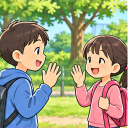
100 Hello.こんにちは。replaced画像なし。表現の意味・場面を表す画像を新規生成。
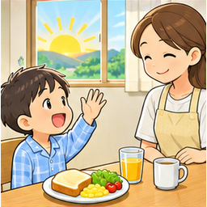
101 Good morning.おはようございます。replaced画像なし。表現の意味・場面を表す画像を新規生成。
画像なし。表現の意味・場面を表す画像を新規生成。
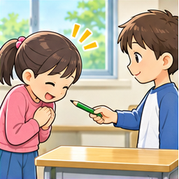
103 Thank you.ありがとう。replaced画像なし。表現の意味・場面を表す画像を新規生成。
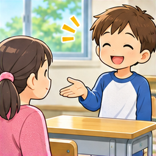
104 You are welcome.どういたしまして。replaced画像なし。表現の意味・場面を表す画像を新規生成。
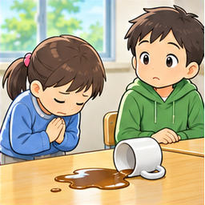
105 I'm sorry.ごめんなさい。replaced画像なし。表現の意味・場面を表す画像を新規生成。
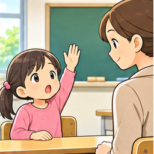
106 Excuse me.すみません。replaced画像なし。表現の意味・場面を表す画像を新規生成。
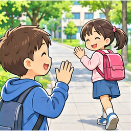
107 See you.またね。replaced画像なし。表現の意味・場面を表す画像を新規生成。
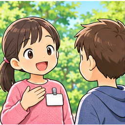
108 My name is Yui.わたしの名前はユイです。replaced画像なし。表現の意味・場面を表す画像を新規生成。
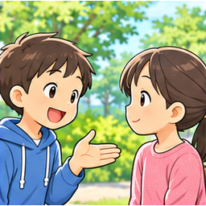
109 How are you?元気ですか。replaced画像なし。表現の意味・場面を表す画像を新規生成。
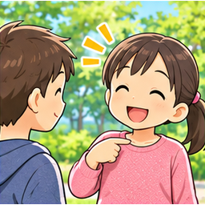
110 I'm fine.元気です。replaced画像なし。表現の意味・場面を表す画像を新規生成。
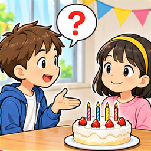
111 How old are you?何歳ですか。replaced画像なし。表現の意味・場面を表す画像を新規生成。
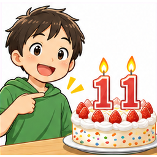
112 I'm eleven.わたしは11歳です。replaced画像なし。表現の意味・場面を表す画像を新規生成。
画像なし。表現の意味・場面を表す画像を新規生成。
画像なし。表現の意味・場面を表す画像を新規生成。
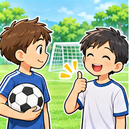
115 Yes, I do.はい、そうです。replaced画像なし。表現の意味・場面を表す画像を新規生成。
画像なし。表現の意味・場面を表す画像を新規生成。
画像なし。表現の意味・場面を表す画像を新規生成。
画像なし。表現の意味・場面を表す画像を新規生成。
画像なし。表現の意味・場面を表す画像を新規生成。
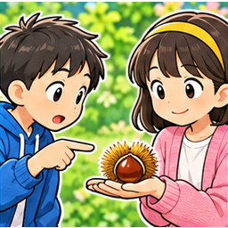
120 What is this?これは何ですか。replaced画像なし。表現の意味・場面を表す画像を新規生成。
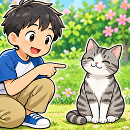
121 It's a cat.それは猫です。replaced画像なし。表現の意味・場面を表す画像を新規生成。
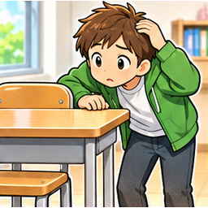
122 Where is my bag?わたしのかばんはどこですか。replaced画像なし。表現の意味・場面を表す画像を新規生成。
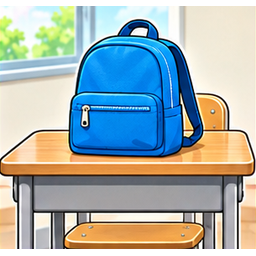
123 It's on the desk.それは机の上にあります。replaced画像なし。表現の意味・場面を表す画像を新規生成。
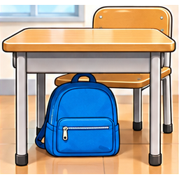
124 It's under the desk.それは机の下にあります。replaced画像なし。表現の意味・場面を表す画像を新規生成。
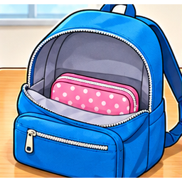
125 It's in the bag.それはかばんの中にあります。replaced画像なし。表現の意味・場面を表す画像を新規生成。
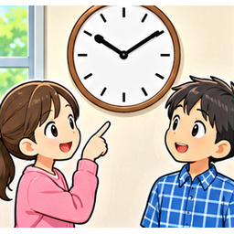
126 What time is it?何時ですか。replaced画像なし。表現の意味・場面を表す画像を新規生成。
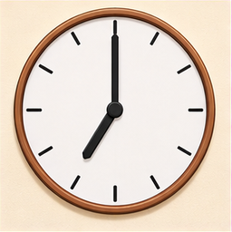
127 It's seven o'clock.7時です。replaced画像なし。表現の意味・場面を表す画像を新規生成。
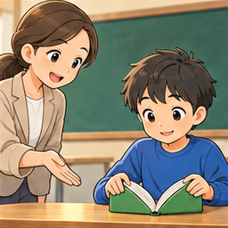
128 Please open your book.本を開いてください。replaced画像なし。表現の意味・場面を表す画像を新規生成。
画像なし。表現の意味・場面を表す画像を新規生成。
 130 January1月retain
130 January1月retain実画像と英語・日本語・例文を照合。主要な物・動作・語義が一致。抽象語は正確な説明図として維持。
 131 February2月retain
131 February2月retain実画像と英語・日本語・例文を照合。主要な物・動作・語義が一致。抽象語は正確な説明図として維持。
 132 March3月retain
132 March3月retain実画像と英語・日本語・例文を照合。主要な物・動作・語義が一致。抽象語は正確な説明図として維持。
 133 April4月retain
133 April4月retain実画像と英語・日本語・例文を照合。主要な物・動作・語義が一致。抽象語は正確な説明図として維持。
 134 May5月retain
134 May5月retain実画像と英語・日本語・例文を照合。主要な物・動作・語義が一致。抽象語は正確な説明図として維持。
 135 June6月retain
135 June6月retain実画像と英語・日本語・例文を照合。主要な物・動作・語義が一致。抽象語は正確な説明図として維持。
 136 July7月retain
136 July7月retain実画像と英語・日本語・例文を照合。主要な物・動作・語義が一致。抽象語は正確な説明図として維持。
 137 August8月retain
137 August8月retain実画像と英語・日本語・例文を照合。主要な物・動作・語義が一致。抽象語は正確な説明図として維持。
 138 September9月retain
138 September9月retain実画像と英語・日本語・例文を照合。主要な物・動作・語義が一致。抽象語は正確な説明図として維持。
 139 October10月retain
139 October10月retain実画像と英語・日本語・例文を照合。主要な物・動作・語義が一致。抽象語は正確な説明図として維持。
 140 November11月retain
140 November11月retain実画像と英語・日本語・例文を照合。主要な物・動作・語義が一致。抽象語は正確な説明図として維持。
 141 December12月retain
141 December12月retain実画像と英語・日本語・例文を照合。主要な物・動作・語義が一致。抽象語は正確な説明図として維持。
 142 eleven11retain
142 eleven11retain実画像と英語・日本語・例文を照合。主要な物・動作・語義が一致。抽象語は正確な説明図として維持。
 143 twelve12retain
143 twelve12retain実画像と英語・日本語・例文を照合。主要な物・動作・語義が一致。抽象語は正確な説明図として維持。
 144 thirteen13retain
144 thirteen13retain実画像と英語・日本語・例文を照合。主要な物・動作・語義が一致。抽象語は正確な説明図として維持。
 145 fourteen14retain
145 fourteen14retain実画像と英語・日本語・例文を照合。主要な物・動作・語義が一致。抽象語は正確な説明図として維持。
 146 fifteen15retain
146 fifteen15retain実画像と英語・日本語・例文を照合。主要な物・動作・語義が一致。抽象語は正確な説明図として維持。
 147 sixteen16retain
147 sixteen16retain実画像と英語・日本語・例文を照合。主要な物・動作・語義が一致。抽象語は正確な説明図として維持。
 148 seventeen17retain
148 seventeen17retain実画像と英語・日本語・例文を照合。主要な物・動作・語義が一致。抽象語は正確な説明図として維持。
 149 eighteen18retain
149 eighteen18retain実画像と英語・日本語・例文を照合。主要な物・動作・語義が一致。抽象語は正確な説明図として維持。
 150 nineteen19retain
150 nineteen19retain実画像と英語・日本語・例文を照合。主要な物・動作・語義が一致。抽象語は正確な説明図として維持。
 151 twenty20retain
151 twenty20retain実画像と英語・日本語・例文を照合。主要な物・動作・語義が一致。抽象語は正確な説明図として維持。
 152 sunny晴れたretain
152 sunny晴れたretain実画像と英語・日本語・例文を照合。主要な物・動作・語義が一致。抽象語は正確な説明図として維持。
 153 rainy雨のretain
153 rainy雨のretain実画像と英語・日本語・例文を照合。主要な物・動作・語義が一致。抽象語は正確な説明図として維持。
 154 cloudy曇ったretain
154 cloudy曇ったretain実画像と英語・日本語・例文を照合。主要な物・動作・語義が一致。抽象語は正確な説明図として維持。
 155 snowy雪のretain
155 snowy雪のretain実画像と英語・日本語・例文を照合。主要な物・動作・語義が一致。抽象語は正確な説明図として維持。
 156 windy風の強いretain
156 windy風の強いretain実画像と英語・日本語・例文を照合。主要な物・動作・語義が一致。抽象語は正確な説明図として維持。
157 rain雨retain実画像と英語・日本語・例文を照合。主要な物・動作・語義が一致。抽象語は正確な説明図として維持。
158 snow雪retain実画像と英語・日本語・例文を照合。主要な物・動作・語義が一致。抽象語は正確な説明図として維持。
 159 fall秋（米国英語）retain
159 fall秋（米国英語）retain実画像と英語・日本語・例文を照合。主要な物・動作・語義が一致。抽象語は正確な説明図として維持。
 160 strawberryいちごretain
160 strawberryいちごretain実画像と英語・日本語・例文を照合。主要な物・動作・語義が一致。抽象語は正確な説明図として維持。
 161 grapeぶどうの実1粒retain
161 grapeぶどうの実1粒retain実画像と英語・日本語・例文を照合。主要な物・動作・語義が一致。抽象語は正確な説明図として維持。
 162 ice creamアイスクリームretain
162 ice creamアイスクリームretain実画像と英語・日本語・例文を照合。主要な物・動作・語義が一致。抽象語は正確な説明図として維持。
 163 chocolateチョコレートretain
163 chocolateチョコレートretain実画像と英語・日本語・例文を照合。主要な物・動作・語義が一致。抽象語は正確な説明図として維持。
 164 cheeseチーズretain
164 cheeseチーズretain実画像と英語・日本語・例文を照合。主要な物・動作・語義が一致。抽象語は正確な説明図として維持。
 165 juiceジュースretain
165 juiceジュースretain実画像と英語・日本語・例文を照合。主要な物・動作・語義が一致。抽象語は正確な説明図として維持。
 166 teaお茶retain
166 teaお茶retain実画像と英語・日本語・例文を照合。主要な物・動作・語義が一致。抽象語は正確な説明図として維持。
 167 soupスープretain
167 soupスープretain実画像と英語・日本語・例文を照合。主要な物・動作・語義が一致。抽象語は正確な説明図として維持。
 168 meat肉（食べ物）retain
168 meat肉（食べ物）retain実画像と英語・日本語・例文を照合。主要な物・動作・語義が一致。抽象語は正確な説明図として維持。
 169 chicken鶏肉retain
169 chicken鶏肉retain実画像と英語・日本語・例文を照合。主要な物・動作・語義が一致。抽象語は正確な説明図として維持。
 170 soccerサッカーretain
170 soccerサッカーretain実画像と英語・日本語・例文を照合。主要な物・動作・語義が一致。抽象語は正確な説明図として維持。
 171 baseball野球retain
171 baseball野球retain実画像と英語・日本語・例文を照合。主要な物・動作・語義が一致。抽象語は正確な説明図として維持。
 172 basketballバスケットボール（競技）retain
172 basketballバスケットボール（競技）retain実画像と英語・日本語・例文を照合。主要な物・動作・語義が一致。抽象語は正確な説明図として維持。
 173 tennisテニスretain
173 tennisテニスretain実画像と英語・日本語・例文を照合。主要な物・動作・語義が一致。抽象語は正確な説明図として維持。
 174 volleyballバレーボール（競技）retain
174 volleyballバレーボール（競技）retain実画像と英語・日本語・例文を照合。主要な物・動作・語義が一致。抽象語は正確な説明図として維持。
 175 badmintonバドミントンretain
175 badmintonバドミントンretain実画像と英語・日本語・例文を照合。主要な物・動作・語義が一致。抽象語は正確な説明図として維持。
 176 sportスポーツ・運動競技retain
176 sportスポーツ・運動競技retain実画像と英語・日本語・例文を照合。主要な物・動作・語義が一致。抽象語は正確な説明図として維持。
 177 music音楽retain
177 music音楽retain実画像と英語・日本語・例文を照合。主要な物・動作・語義が一致。抽象語は正確な説明図として維持。
 178 pianoピアノretain
178 pianoピアノretain実画像と英語・日本語・例文を照合。主要な物・動作・語義が一致。抽象語は正確な説明図として維持。
 179 guitarギターretain
179 guitarギターretain実画像と英語・日本語・例文を照合。主要な物・動作・語義が一致。抽象語は正確な説明図として維持。
 180 store店retain
180 store店retain実画像と英語・日本語・例文を照合。主要な物・動作・語義が一致。抽象語は正確な説明図として維持。
 181 supermarketスーパーマーケットretain
181 supermarketスーパーマーケットretain実画像と英語・日本語・例文を照合。主要な物・動作・語義が一致。抽象語は正確な説明図として維持。
 182 restaurantレストランretain
182 restaurantレストランretain実画像と英語・日本語・例文を照合。主要な物・動作・語義が一致。抽象語は正確な説明図として維持。
 183 zoo動物園retain
183 zoo動物園retain実画像と英語・日本語・例文を照合。主要な物・動作・語義が一致。抽象語は正確な説明図として維持。
 184 poolプールretain
184 poolプールretain実画像と英語・日本語・例文を照合。主要な物・動作・語義が一致。抽象語は正確な説明図として維持。
 185 kitchen台所retain
185 kitchen台所retain実画像と英語・日本語・例文を照合。主要な物・動作・語義が一致。抽象語は正確な説明図として維持。
 186 bathroom浴室・トイレのある部屋retain
186 bathroom浴室・トイレのある部屋retain実画像と英語・日本語・例文を照合。主要な物・動作・語義が一致。抽象語は正確な説明図として維持。
 187 garden庭retain
187 garden庭retain実画像と英語・日本語・例文を照合。主要な物・動作・語義が一致。抽象語は正確な説明図として維持。
 188 town町retain
188 town町retain実画像と英語・日本語・例文を照合。主要な物・動作・語義が一致。抽象語は正確な説明図として維持。
 189 beach砂浜・海辺retain
189 beach砂浜・海辺retain実画像と英語・日本語・例文を照合。主要な物・動作・語義が一致。抽象語は正確な説明図として維持。
 190 get up起きるretain
190 get up起きるretain実画像と英語・日本語・例文を照合。主要な物・動作・語義が一致。抽象語は正確な説明図として維持。
 191 go行くretain
191 go行くretain実画像と英語・日本語・例文を照合。主要な物・動作・語義が一致。抽象語は正確な説明図として維持。
 192 come来るretain
192 come来るretain実画像と英語・日本語・例文を照合。主要な物・動作・語義が一致。抽象語は正確な説明図として維持。

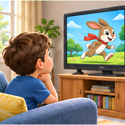
193 watch見る（テレビなどを）replaced双眼鏡で遠景を見るlookの絵。watchの継続して見る用法を示さない。
 194 listen聞く（耳を傾ける）retain
194 listen聞く（耳を傾ける）retain実画像と英語・日本語・例文を照合。主要な物・動作・語義が一致。抽象語は正確な説明図として維持。
 195 speak話すretain
195 speak話すretain実画像と英語・日本語・例文を照合。主要な物・動作・語義が一致。抽象語は正確な説明図として維持。
 196 walk歩くretain
196 walk歩くretain実画像と英語・日本語・例文を照合。主要な物・動作・語義が一致。抽象語は正確な説明図として維持。
 197 wash洗うretain
197 wash洗うretain実画像と英語・日本語・例文を照合。主要な物・動作・語義が一致。抽象語は正確な説明図として維持。
 198 cook料理するretain
198 cook料理するretain実画像と英語・日本語・例文を照合。主要な物・動作・語義が一致。抽象語は正確な説明図として維持。
 199 sleep眠るretain
199 sleep眠るretain実画像と英語・日本語・例文を照合。主要な物・動作・語義が一致。抽象語は正確な説明図として維持。

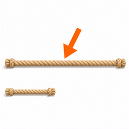
200 long長いreplaced長短の棒のどちらが対象か、日本語ラベルに依存。
 201 short短いretain
201 short短いretain実画像と英語・日本語・例文を照合。主要な物・動作・語義が一致。抽象語は正確な説明図として維持。
 202 new新しいretain
202 new新しいretain実画像と英語・日本語・例文を照合。主要な物・動作・語義が一致。抽象語は正確な説明図として維持。
 203 old古いretain
203 old古いretain実画像と英語・日本語・例文を照合。主要な物・動作・語義が一致。抽象語は正確な説明図として維持。
 204 hot熱い・暑いretain
204 hot熱い・暑いretain実画像と英語・日本語・例文を照合。主要な物・動作・語義が一致。抽象語は正確な説明図として維持。
 205 cold冷たい・寒いretain
205 cold冷たい・寒いretain実画像と英語・日本語・例文を照合。主要な物・動作・語義が一致。抽象語は正確な説明図として維持。
 206 kind親切なretain
206 kind親切なretain実画像と英語・日本語・例文を照合。主要な物・動作・語義が一致。抽象語は正確な説明図として維持。
 207 busy忙しいretain
207 busy忙しいretain実画像と英語・日本語・例文を照合。主要な物・動作・語義が一致。抽象語は正確な説明図として維持。
 208 tired疲れたretain
208 tired疲れたretain実画像と英語・日本語・例文を照合。主要な物・動作・語義が一致。抽象語は正確な説明図として維持。
 209 goodよいretain
209 goodよいretain実画像と英語・日本語・例文を照合。主要な物・動作・語義が一致。抽象語は正確な説明図として維持。
 210 notebookノートretain
210 notebookノートretain実画像と英語・日本語・例文を照合。主要な物・動作・語義が一致。抽象語は正確な説明図として維持。
 211 eraser消しゴムretain
211 eraser消しゴムretain実画像と英語・日本語・例文を照合。主要な物・動作・語義が一致。抽象語は正確な説明図として維持。
 212 ruler定規retain
212 ruler定規retain実画像と英語・日本語・例文を照合。主要な物・動作・語義が一致。抽象語は正確な説明図として維持。
 213 computerコンピューターretain
213 computerコンピューターretain実画像と英語・日本語・例文を照合。主要な物・動作・語義が一致。抽象語は正確な説明図として維持。
 214 map地図retain
214 map地図retain実画像と英語・日本語・例文を照合。主要な物・動作・語義が一致。抽象語は正確な説明図として維持。
 215 box箱retain
215 box箱retain実画像と英語・日本語・例文を照合。主要な物・動作・語義が一致。抽象語は正確な説明図として維持。
 216 picture絵・写真retain
216 picture絵・写真retain実画像と英語・日本語・例文を照合。主要な物・動作・語義が一致。抽象語は正確な説明図として維持。
 217 clock時計（置き時計・掛け時計）retain
217 clock時計（置き時計・掛け時計）retain実画像と英語・日本語・例文を照合。主要な物・動作・語義が一致。抽象語は正確な説明図として維持。
 218 class授業・学級retain
218 class授業・学級retain実画像と英語・日本語・例文を照合。主要な物・動作・語義が一致。抽象語は正確な説明図として維持。

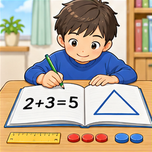
219 math算数・数学（米国英語）replaced説明カードの縮小された日本語に依存し、mathの学習場面と数式が小さい。
 220 breakfast朝食retain
220 breakfast朝食retain実画像と英語・日本語・例文を照合。主要な物・動作・語義が一致。抽象語は正確な説明図として維持。
 221 lunch昼食retain
221 lunch昼食retain実画像と英語・日本語・例文を照合。主要な物・動作・語義が一致。抽象語は正確な説明図として維持。
 222 dinner夕食retain
222 dinner夕食retain実画像と英語・日本語・例文を照合。主要な物・動作・語義が一致。抽象語は正確な説明図として維持。
 223 morning朝・午前retain
223 morning朝・午前retain実画像と英語・日本語・例文を照合。主要な物・動作・語義が一致。抽象語は正確な説明図として維持。

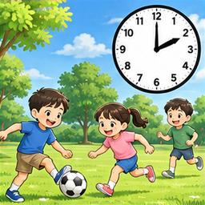
224 afternoon午後replaced昼から夜へ移る図でafternoonより夕暮れに見える。
 225 evening夕方・晩retain
225 evening夕方・晩retain実画像と英語・日本語・例文を照合。主要な物・動作・語義が一致。抽象語は正確な説明図として維持。
 226 night夜retain
226 night夜retain実画像と英語・日本語・例文を照合。主要な物・動作・語義が一致。抽象語は正確な説明図として維持。
 227 today今日retain
227 today今日retain実画像と英語・日本語・例文を照合。主要な物・動作・語義が一致。抽象語は正確な説明図として維持。
 228 tomorrow明日retain
228 tomorrow明日retain実画像と英語・日本語・例文を照合。主要な物・動作・語義が一致。抽象語は正確な説明図として維持。
 229 birthday誕生日retain
229 birthday誕生日retain実画像と英語・日本語・例文を照合。主要な物・動作・語義が一致。抽象語は正確な説明図として維持。
画像なし。表現の意味・場面を表す画像を新規生成。
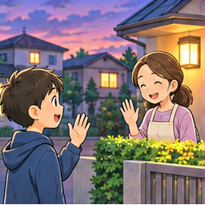
231 Good evening.こんばんは。replaced画像なし。表現の意味・場面を表す画像を新規生成。
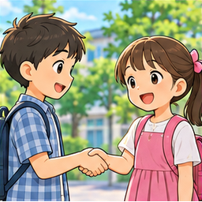
232 Nice to meet you.はじめまして。replaced画像なし。表現の意味・場面を表す画像を新規生成。
画像なし。表現の意味・場面を表す画像を新規生成。
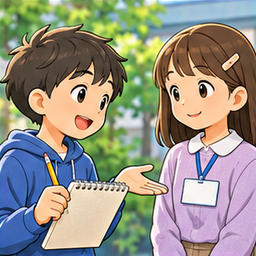
234 How do you spell your name?あなたの名前はどうつづりますか。replaced画像なし。表現の意味・場面を表す画像を新規生成。
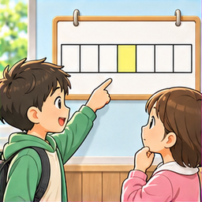
235 What day is it today?今日は何曜日ですか。replaced画像なし。表現の意味・場面を表す画像を新規生成。
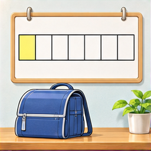
236 It's Monday.月曜日です。replaced画像なし。表現の意味・場面を表す画像を新規生成。
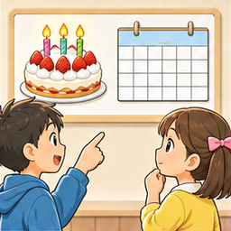
237 When is your birthday?誕生日はいつですか。replaced画像なし。表現の意味・場面を表す画像を新規生成。
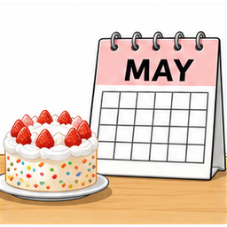
238 My birthday is in May.わたしの誕生日は5月です。replaced画像なし。表現の意味・場面を表す画像を新規生成。
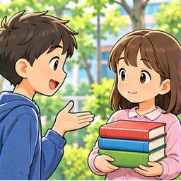
239 How many books do you have?本を何冊持っていますか。replaced画像なし。表現の意味・場面を表す画像を新規生成。
画像なし。表現の意味・場面を表す画像を新規生成。
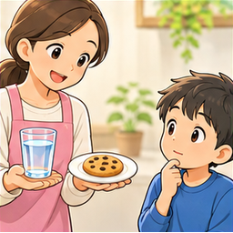
241 What do you want?何が欲しいですか。replaced画像なし。表現の意味・場面を表す画像を新規生成。
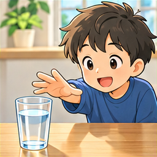
242 I want some water.わたしは水が欲しいです。replaced画像なし。表現の意味・場面を表す画像を新規生成。
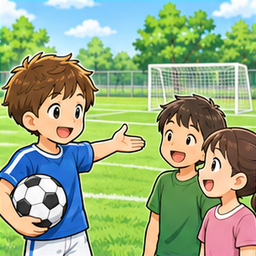
243 Let's play soccer.サッカーをしましょう。replaced画像なし。表現の意味・場面を表す画像を新規生成。
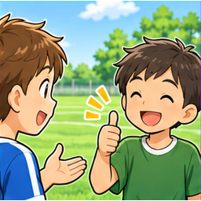
244 That sounds good.それはいいですね。replaced画像なし。表現の意味・場面を表す画像を新規生成。
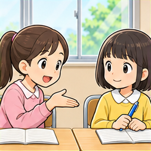
245 Can I use your pen?あなたのペンを使ってもいいですか。replaced画像なし。表現の意味・場面を表す画像を新規生成。
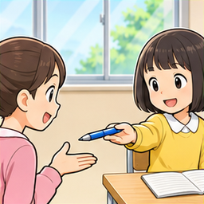
246 Here you are.はい、どうぞ。replaced画像なし。表現の意味・場面を表す画像を新規生成。
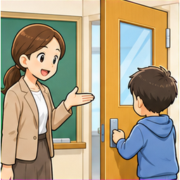
247 Please close the door.ドアを閉めてください。replaced画像なし。表現の意味・場面を表す画像を新規生成。
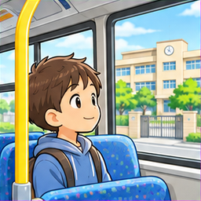
248 I go to school by bus.わたしはバスで学校に行きます。replaced画像なし。表現の意味・場面を表す画像を新規生成。
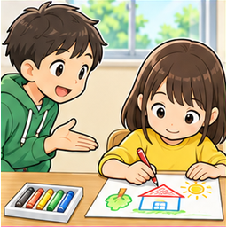
249 What are you doing?何をしているところですか。replaced画像なし。表現の意味・場面を表す画像を新規生成。
 250 sandwichサンドイッチretain
250 sandwichサンドイッチretain実画像と英語・日本語・例文を照合。主要な物・動作・語義が一致。抽象語は正確な説明図として維持。
 251 hamburgerハンバーガーretain
251 hamburgerハンバーガーretain実画像と英語・日本語・例文を照合。主要な物・動作・語義が一致。抽象語は正確な説明図として維持。
 252 potatoじゃがいもretain
252 potatoじゃがいもretain実画像と英語・日本語・例文を照合。主要な物・動作・語義が一致。抽象語は正確な説明図として維持。
 253 tomatoトマトretain
253 tomatoトマトretain実画像と英語・日本語・例文を照合。主要な物・動作・語義が一致。抽象語は正確な説明図として維持。
 254 carrotにんじんretain
254 carrotにんじんretain実画像と英語・日本語・例文を照合。主要な物・動作・語義が一致。抽象語は正確な説明図として維持。
 255 onion玉ねぎretain
255 onion玉ねぎretain実画像と英語・日本語・例文を照合。主要な物・動作・語義が一致。抽象語は正確な説明図として維持。
 256 lemonレモンretain
256 lemonレモンretain実画像と英語・日本語・例文を照合。主要な物・動作・語義が一致。抽象語は正確な説明図として維持。
 257 peach桃retain
257 peach桃retain実画像と英語・日本語・例文を照合。主要な物・動作・語義が一致。抽象語は正確な説明図として維持。
 258 melonメロンretain
258 melonメロンretain実画像と英語・日本語・例文を照合。主要な物・動作・語義が一致。抽象語は正確な説明図として維持。
 259 cookieクッキーretain
259 cookieクッキーretain実画像と英語・日本語・例文を照合。主要な物・動作・語義が一致。抽象語は正確な説明図として維持。
 260 cupカップretain
260 cupカップretain実画像と英語・日本語・例文を照合。主要な物・動作・語義が一致。抽象語は正確な説明図として維持。
 261 glassコップretain
261 glassコップretain実画像と英語・日本語・例文を照合。主要な物・動作・語義が一致。抽象語は正確な説明図として維持。
 262 plate皿retain
262 plate皿retain実画像と英語・日本語・例文を照合。主要な物・動作・語義が一致。抽象語は正確な説明図として維持。
 263 spoonスプーンretain
263 spoonスプーンretain実画像と英語・日本語・例文を照合。主要な物・動作・語義が一致。抽象語は正確な説明図として維持。
 264 forkフォークretain
264 forkフォークretain実画像と英語・日本語・例文を照合。主要な物・動作・語義が一致。抽象語は正確な説明図として維持。
 265 knifeナイフretain
265 knifeナイフretain実画像と英語・日本語・例文を照合。主要な物・動作・語義が一致。抽象語は正確な説明図として維持。
 266 bottle瓶retain
266 bottle瓶retain実画像と英語・日本語・例文を照合。主要な物・動作・語義が一致。抽象語は正確な説明図として維持。
 267 basketかごretain
267 basketかごretain実画像と英語・日本語・例文を照合。主要な物・動作・語義が一致。抽象語は正確な説明図として維持。
 268 coin硬貨retain
268 coin硬貨retain実画像と英語・日本語・例文を照合。主要な物・動作・語義が一致。抽象語は正確な説明図として維持。
 269 menuメニューretain
269 menuメニューretain実画像と英語・日本語・例文を照合。主要な物・動作・語義が一致。抽象語は正確な説明図として維持。
 270 present贈り物retain
270 present贈り物retain実画像と英語・日本語・例文を照合。主要な物・動作・語義が一致。抽象語は正確な説明図として維持。
 271 dollarドル（通貨単位）retain
271 dollarドル（通貨単位）retain実画像と英語・日本語・例文を照合。主要な物・動作・語義が一致。抽象語は正確な説明図として維持。
 272 bear熊retain
272 bear熊retain実画像と英語・日本語・例文を照合。主要な物・動作・語義が一致。抽象語は正確な説明図として維持。
 273 tiger虎retain
273 tiger虎retain実画像と英語・日本語・例文を照合。主要な物・動作・語義が一致。抽象語は正確な説明図として維持。
 274 foxきつねretain
274 foxきつねretain実画像と英語・日本語・例文を照合。主要な物・動作・語義が一致。抽象語は正確な説明図として維持。
 275 sheep羊retain
275 sheep羊retain実画像と英語・日本語・例文を照合。主要な物・動作・語義が一致。抽象語は正確な説明図として維持。
 276 duckあひるretain
276 duckあひるretain実画像と英語・日本語・例文を照合。主要な物・動作・語義が一致。抽象語は正確な説明図として維持。
 277 mouseねずみretain
277 mouseねずみretain実画像と英語・日本語・例文を照合。主要な物・動作・語義が一致。抽象語は正確な説明図として維持。
 278 turtle亀retain
278 turtle亀retain実画像と英語・日本語・例文を照合。主要な物・動作・語義が一致。抽象語は正確な説明図として維持。
 279 snake蛇retain
279 snake蛇retain実画像と英語・日本語・例文を照合。主要な物・動作・語義が一致。抽象語は正確な説明図として維持。
 280 frog蛙retain
280 frog蛙retain実画像と英語・日本語・例文を照合。主要な物・動作・語義が一致。抽象語は正確な説明図として維持。
 281 butterfly蝶retain
281 butterfly蝶retain実画像と英語・日本語・例文を照合。主要な物・動作・語義が一致。抽象語は正確な説明図として維持。
 282 ant蟻retain
282 ant蟻retain実画像と英語・日本語・例文を照合。主要な物・動作・語義が一致。抽象語は正確な説明図として維持。
 283 bee蜂retain
283 bee蜂retain実画像と英語・日本語・例文を照合。主要な物・動作・語義が一致。抽象語は正確な説明図として維持。
 284 petペットretain
284 petペットretain実画像と英語・日本語・例文を照合。主要な物・動作・語義が一致。抽象語は正確な説明図として維持。
 285 flower花retain
285 flower花retain実画像と英語・日本語・例文を照合。主要な物・動作・語義が一致。抽象語は正確な説明図として維持。
 286 tree木retain
286 tree木retain実画像と英語・日本語・例文を照合。主要な物・動作・語義が一致。抽象語は正確な説明図として維持。
 287 leaf葉retain
287 leaf葉retain実画像と英語・日本語・例文を照合。主要な物・動作・語義が一致。抽象語は正確な説明図として維持。
 288 river川retain
288 river川retain実画像と英語・日本語・例文を照合。主要な物・動作・語義が一致。抽象語は正確な説明図として維持。
 289 lake湖retain
289 lake湖retain実画像と英語・日本語・例文を照合。主要な物・動作・語義が一致。抽象語は正確な説明図として維持。
 290 mountain山retain
290 mountain山retain実画像と英語・日本語・例文を照合。主要な物・動作・語義が一致。抽象語は正確な説明図として維持。
 291 star星replaced
291 star星replaced太陽のような巨大な恒星が主役で、初学者のstarとsunの区別が弱い。
 292 cloud雲retain
292 cloud雲retain実画像と英語・日本語・例文を照合。主要な物・動作・語義が一致。抽象語は正確な説明図として維持。
 293 stone石retain
293 stone石retain実画像と英語・日本語・例文を照合。主要な物・動作・語義が一致。抽象語は正確な説明図として維持。
 294 island島retain
294 island島retain実画像と英語・日本語・例文を照合。主要な物・動作・語義が一致。抽象語は正確な説明図として維持。
 295 pencil case筆箱retain
295 pencil case筆箱retain実画像と英語・日本語・例文を照合。主要な物・動作・語義が一致。抽象語は正確な説明図として維持。
 296 textbook教科書retain
296 textbook教科書retain実画像と英語・日本語・例文を照合。主要な物・動作・語義が一致。抽象語は正確な説明図として維持。
 297 dictionary辞書retain
297 dictionary辞書retain実画像と英語・日本語・例文を照合。主要な物・動作・語義が一致。抽象語は正確な説明図として維持。
 298 letter手紙retain
298 letter手紙retain実画像と英語・日本語・例文を照合。主要な物・動作・語義が一致。抽象語は正確な説明図として維持。
 299 stamp切手retain
299 stamp切手retain実画像と英語・日本語・例文を照合。主要な物・動作・語義が一致。抽象語は正確な説明図として維持。
 300 postcardはがきretain
300 postcardはがきretain実画像と英語・日本語・例文を照合。主要な物・動作・語義が一致。抽象語は正確な説明図として維持。
 301 calendarカレンダーretain
301 calendarカレンダーretain実画像と英語・日本語・例文を照合。主要な物・動作・語義が一致。抽象語は正確な説明図として維持。
 302 cameraカメラretain
302 cameraカメラretain実画像と英語・日本語・例文を照合。主要な物・動作・語義が一致。抽象語は正確な説明図として維持。
 303 phone電話retain
303 phone電話retain実画像と英語・日本語・例文を照合。主要な物・動作・語義が一致。抽象語は正確な説明図として維持。
 304 key鍵retain
304 key鍵retain実画像と英語・日本語・例文を照合。主要な物・動作・語義が一致。抽象語は正確な説明図として維持。
 305 umbrella傘retain
305 umbrella傘retain実画像と英語・日本語・例文を照合。主要な物・動作・語義が一致。抽象語は正確な説明図として維持。
 306 bicycle自転車retain
306 bicycle自転車retain実画像と英語・日本語・例文を照合。主要な物・動作・語義が一致。抽象語は正確な説明図として維持。
307 bike自転車（くだけた言い方）retain実画像と英語・日本語・例文を照合。主要な物・動作・語義が一致。抽象語は正確な説明図として維持。
 308 ballボールretain
308 ballボールretain実画像と英語・日本語・例文を照合。主要な物・動作・語義が一致。抽象語は正確な説明図として維持。
 309 batバットretain
309 batバットretain実画像と英語・日本語・例文を照合。主要な物・動作・語義が一致。抽象語は正確な説明図として維持。
 310 racketラケットretain
310 racketラケットretain実画像と英語・日本語・例文を照合。主要な物・動作・語義が一致。抽象語は正確な説明図として維持。
 311 gameゲームretain
311 gameゲームretain実画像と英語・日本語・例文を照合。主要な物・動作・語義が一致。抽象語は正確な説明図として維持。
 312 toyおもちゃretain
312 toyおもちゃretain実画像と英語・日本語・例文を照合。主要な物・動作・語義が一致。抽象語は正確な説明図として維持。
 313 doll人形retain
313 doll人形retain実画像と英語・日本語・例文を照合。主要な物・動作・語義が一致。抽象語は正確な説明図として維持。
 314 robotロボットretain
314 robotロボットretain実画像と英語・日本語・例文を照合。主要な物・動作・語義が一致。抽象語は正確な説明図として維持。
 315 kite凧retain
315 kite凧retain実画像と英語・日本語・例文を照合。主要な物・動作・語義が一致。抽象語は正確な説明図として維持。
 316 model模型retain
316 model模型retain実画像と英語・日本語・例文を照合。主要な物・動作・語義が一致。抽象語は正確な説明図として維持。
 317 ticket切符retain
317 ticket切符retain実画像と英語・日本語・例文を照合。主要な物・動作・語義が一致。抽象語は正確な説明図として維持。
 318 testテストretain
318 testテストretain実画像と英語・日本語・例文を照合。主要な物・動作・語義が一致。抽象語は正確な説明図として維持。
 319 question質問retain
319 question質問retain実画像と英語・日本語・例文を照合。主要な物・動作・語義が一致。抽象語は正確な説明図として維持。
 320 answer答えretain
320 answer答えretain実画像と英語・日本語・例文を照合。主要な物・動作・語義が一致。抽象語は正確な説明図として維持。

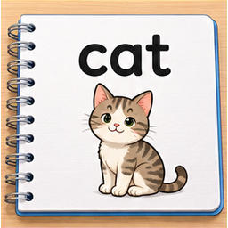
321 word単語replaced日本語の『犬 学校』を並べる説明カードで、英語のwordへ直接つながらない。
 322 pageページretain
322 pageページretain実画像と英語・日本語・例文を照合。主要な物・動作・語義が一致。抽象語は正確な説明図として維持。

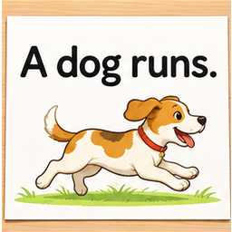
323 sentence文replaced日本語の文だけを示す説明図。英語のsentenceの具体例がない。
 324 story物語retain
324 story物語retain実画像と英語・日本語・例文を照合。主要な物・動作・語義が一致。抽象語は正確な説明図として維持。
 325 song歌retain
325 song歌retain実画像と英語・日本語・例文を照合。主要な物・動作・語義が一致。抽象語は正確な説明図として維持。
 326 movie映画retain
326 movie映画retain実画像と英語・日本語・例文を照合。主要な物・動作・語義が一致。抽象語は正確な説明図として維持。
 327 CDCDreplaced
327 CDCDreplacedCDの模式図に説明文が多く、実物の円盤の特徴が小さい。
 328 tableテーブルretain
328 tableテーブルretain実画像と英語・日本語・例文を照合。主要な物・動作・語義が一致。抽象語は正確な説明図として維持。
 329 bedベッドretain
329 bedベッドretain実画像と英語・日本語・例文を照合。主要な物・動作・語義が一致。抽象語は正確な説明図として維持。
 330 sofaソファretain
330 sofaソファretain実画像と英語・日本語・例文を照合。主要な物・動作・語義が一致。抽象語は正確な説明図として維持。
 331 TVテレビretain
331 TVテレビretain実画像と英語・日本語・例文を照合。主要な物・動作・語義が一致。抽象語は正確な説明図として維持。
332 televisionテレビ（正式な言い方）retain実画像と英語・日本語・例文を照合。主要な物・動作・語義が一致。抽象語は正確な説明図として維持。
 333 radioラジオretain
333 radioラジオretain実画像と英語・日本語・例文を照合。主要な物・動作・語義が一致。抽象語は正確な説明図として維持。
 334 lampランプretain
334 lampランプretain実画像と英語・日本語・例文を照合。主要な物・動作・語義が一致。抽象語は正確な説明図として維持。
 335 mirror鏡retain
335 mirror鏡retain実画像と英語・日本語・例文を照合。主要な物・動作・語義が一致。抽象語は正確な説明図として維持。
 336 desk lamp電気スタンドretain
336 desk lamp電気スタンドretain実画像と英語・日本語・例文を照合。主要な物・動作・語義が一致。抽象語は正確な説明図として維持。
 337 floor床retain
337 floor床retain実画像と英語・日本語・例文を照合。主要な物・動作・語義が一致。抽象語は正確な説明図として維持。
 338 wall壁retain
338 wall壁retain実画像と英語・日本語・例文を照合。主要な物・動作・語義が一致。抽象語は正確な説明図として維持。
 339 roof屋根replaced
339 roof屋根replaced家全体の画像で、roofの屋根が指定されない。
 340 gate門retain
340 gate門retain実画像と英語・日本語・例文を照合。主要な物・動作・語義が一致。抽象語は正確な説明図として維持。
 341 building建物retain
341 building建物retain実画像と英語・日本語・例文を照合。主要な物・動作・語義が一致。抽象語は正確な説明図として維持。
 342 classroom教室retain
342 classroom教室retain実画像と英語・日本語・例文を照合。主要な物・動作・語義が一致。抽象語は正確な説明図として維持。
 343 gym体育館retain
343 gym体育館retain実画像と英語・日本語・例文を照合。主要な物・動作・語義が一致。抽象語は正確な説明図として維持。
 344 office事務所retain
344 office事務所retain実画像と英語・日本語・例文を照合。主要な物・動作・語義が一致。抽象語は正確な説明図として維持。
 345 post office郵便局retain
345 post office郵便局retain実画像と英語・日本語・例文を照合。主要な物・動作・語義が一致。抽象語は正確な説明図として維持。
 346 bank銀行retain
346 bank銀行retain実画像と英語・日本語・例文を照合。主要な物・動作・語義が一致。抽象語は正確な説明図として維持。
 347 hotelホテルretain
347 hotelホテルretain実画像と英語・日本語・例文を照合。主要な物・動作・語義が一致。抽象語は正確な説明図として維持。
 348 museum博物館retain
348 museum博物館retain実画像と英語・日本語・例文を照合。主要な物・動作・語義が一致。抽象語は正確な説明図として維持。
 349 airport空港retain
349 airport空港retain実画像と英語・日本語・例文を照合。主要な物・動作・語義が一致。抽象語は正確な説明図として維持。
 350 bus stopバス停retain
350 bus stopバス停retain実画像と英語・日本語・例文を照合。主要な物・動作・語義が一致。抽象語は正確な説明図として維持。
351 shop店retain実画像と英語・日本語・例文を照合。主要な物・動作・語義が一致。抽象語は正確な説明図として維持。
 352 bookstore本屋retain
352 bookstore本屋retain実画像と英語・日本語・例文を照合。主要な物・動作・語義が一致。抽象語は正確な説明図として維持。
 353 flower shop花屋retain
353 flower shop花屋retain実画像と英語・日本語・例文を照合。主要な物・動作・語義が一致。抽象語は正確な説明図として維持。
 354 street通りretain
354 street通りretain実画像と英語・日本語・例文を照合。主要な物・動作・語義が一致。抽象語は正確な説明図として維持。
 355 road道路retain
355 road道路retain実画像と英語・日本語・例文を照合。主要な物・動作・語義が一致。抽象語は正確な説明図として維持。
 356 bridge橋retain
356 bridge橋retain実画像と英語・日本語・例文を照合。主要な物・動作・語義が一致。抽象語は正確な説明図として維持。
 357 corner角retain
357 corner角retain実画像と英語・日本語・例文を照合。主要な物・動作・語義が一致。抽象語は正確な説明図として維持。
 358 farm農場retain
358 farm農場retain実画像と英語・日本語・例文を照合。主要な物・動作・語義が一致。抽象語は正確な説明図として維持。
 359 city都市retain
359 city都市retain実画像と英語・日本語・例文を照合。主要な物・動作・語義が一致。抽象語は正確な説明図として維持。
 360 village村retain
360 village村retain実画像と英語・日本語・例文を照合。主要な物・動作・語義が一致。抽象語は正確な説明図として維持。
 361 country国replaced
361 country国replaced国会議事堂と群衆の絵で、country（国）に直接つながらない。
 362 train電車retain
362 train電車retain実画像と英語・日本語・例文を照合。主要な物・動作・語義が一致。抽象語は正確な説明図として維持。
 363 plane飛行機retain
363 plane飛行機retain実画像と英語・日本語・例文を照合。主要な物・動作・語義が一致。抽象語は正確な説明図として維持。
 364 ship船retain
364 ship船retain実画像と英語・日本語・例文を照合。主要な物・動作・語義が一致。抽象語は正確な説明図として維持。
 365 boat小舟retain
365 boat小舟retain実画像と英語・日本語・例文を照合。主要な物・動作・語義が一致。抽象語は正確な説明図として維持。
 366 truckトラックretain
366 truckトラックretain実画像と英語・日本語・例文を照合。主要な物・動作・語義が一致。抽象語は正確な説明図として維持。
 367 taxiタクシーretain
367 taxiタクシーretain実画像と英語・日本語・例文を照合。主要な物・動作・語義が一致。抽象語は正確な説明図として維持。
 368 baby赤ちゃんretain
368 baby赤ちゃんretain実画像と英語・日本語・例文を照合。主要な物・動作・語義が一致。抽象語は正確な説明図として維持。
 369 child子どもreplaced
369 child子どもreplaced単数childに2人の子ども。childrenとの区別がつかない。
 370 man男性retain
370 man男性retain実画像と英語・日本語・例文を照合。主要な物・動作・語義が一致。抽象語は正確な説明図として維持。
 371 woman女性retain
371 woman女性retain実画像と英語・日本語・例文を照合。主要な物・動作・語義が一致。抽象語は正確な説明図として維持。
 372 uncleおじreplaced
372 uncleおじreplaced父子に見える2人だけで、おじの関係が表れていない。
 373 auntおばreplaced
373 auntおばreplaced複数の女性がいるだけで、おばの対象と親との関係が分からない。
 374 cousinいとこreplaced
374 cousinいとこreplaced子ども同士の遊びだけでは友達や兄弟と区別できず、いとこの関係が弱い。
 375 parent親replaced
375 parent親replaced単数parentに両親を同列表示し、parentsとの区別が不明。
 376 doctor医者retain
376 doctor医者retain実画像と英語・日本語・例文を照合。主要な物・動作・語義が一致。抽象語は正確な説明図として維持。
 377 nurse看護師retain
377 nurse看護師retain実画像と英語・日本語・例文を照合。主要な物・動作・語義が一致。抽象語は正確な説明図として維持。
 378 dentist歯医者retain
378 dentist歯医者retain実画像と英語・日本語・例文を照合。主要な物・動作・語義が一致。抽象語は正確な説明図として維持。
 379 farmer農家の人retain
379 farmer農家の人retain実画像と英語・日本語・例文を照合。主要な物・動作・語義が一致。抽象語は正確な説明図として維持。
 380 driver運転手retain
380 driver運転手retain実画像と英語・日本語・例文を照合。主要な物・動作・語義が一致。抽象語は正確な説明図として維持。
 381 singer歌手retain
381 singer歌手retain実画像と英語・日本語・例文を照合。主要な物・動作・語義が一致。抽象語は正確な説明図として維持。
 382 player選手retain
382 player選手retain実画像と英語・日本語・例文を照合。主要な物・動作・語義が一致。抽象語は正確な説明図として維持。
 383 police officer警察官retain
383 police officer警察官retain実画像と英語・日本語・例文を照合。主要な物・動作・語義が一致。抽象語は正確な説明図として維持。
 384 face顔retain
384 face顔retain実画像と英語・日本語・例文を照合。主要な物・動作・語義が一致。抽象語は正確な説明図として維持。
 385 arm腕retain
385 arm腕retain実画像と英語・日本語・例文を照合。主要な物・動作・語義が一致。抽象語は正確な説明図として維持。
 386 leg脚retain
386 leg脚retain実画像と英語・日本語・例文を照合。主要な物・動作・語義が一致。抽象語は正確な説明図として維持。
 387 foot足（足首から先）retain
387 foot足（足首から先）retain実画像と英語・日本語・例文を照合。主要な物・動作・語義が一致。抽象語は正確な説明図として維持。
 388 finger指replaced
388 finger指replaced手全体を示し、fingerの指1本が特定できない。
実画像と英語・日本語・例文を照合。主要な物・動作・語義が一致。抽象語は正確な説明図として維持。
 390 neck首retain
390 neck首retain実画像と英語・日本語・例文を照合。主要な物・動作・語義が一致。抽象語は正確な説明図として維持。
 391 knee膝retain
391 knee膝retain実画像と英語・日本語・例文を照合。主要な物・動作・語義が一致。抽象語は正確な説明図として維持。
 392 shoulder肩retain
392 shoulder肩retain実画像と英語・日本語・例文を照合。主要な物・動作・語義が一致。抽象語は正確な説明図として維持。
 393 capつばのある帽子retain
393 capつばのある帽子retain実画像と英語・日本語・例文を照合。主要な物・動作・語義が一致。抽象語は正確な説明図として維持。
 394 T-shirtTシャツretain
394 T-shirtTシャツretain実画像と英語・日本語・例文を照合。主要な物・動作・語義が一致。抽象語は正確な説明図として維持。
 395 sweaterセーターretain
395 sweaterセーターretain実画像と英語・日本語・例文を照合。主要な物・動作・語義が一致。抽象語は正確な説明図として維持。
 396 jacketジャケットretain
396 jacketジャケットretain実画像と英語・日本語・例文を照合。主要な物・動作・語義が一致。抽象語は正確な説明図として維持。
 397 skirtスカートretain
397 skirtスカートretain実画像と英語・日本語・例文を照合。主要な物・動作・語義が一致。抽象語は正確な説明図として維持。
 398 dressワンピースretain
398 dressワンピースretain実画像と英語・日本語・例文を照合。主要な物・動作・語義が一致。抽象語は正確な説明図として維持。
 399 sock靴下replaced
399 sock靴下replaced単数sockに左右2枚の靴下。
 400 glove手袋replaced
400 glove手袋replaced単数gloveに手袋2枚。
 401 bootブーツreplaced
401 bootブーツreplaced単数bootに左右2本のブーツ。
 402 uniform制服retain
402 uniform制服retain実画像と英語・日本語・例文を照合。主要な物・動作・語義が一致。抽象語は正確な説明図として維持。
 403 Iわたしはretain
403 Iわたしはretain実画像と英語・日本語・例文を照合。主要な物・動作・語義が一致。抽象語は正確な説明図として維持。
 404 youあなたは・あなたたちはretain
404 youあなたは・あなたたちはretain実画像と英語・日本語・例文を照合。主要な物・動作・語義が一致。抽象語は正確な説明図として維持。
 405 he彼はretain
405 he彼はretain実画像と英語・日本語・例文を照合。主要な物・動作・語義が一致。抽象語は正確な説明図として維持。
 406 she彼女はretain
406 she彼女はretain実画像と英語・日本語・例文を照合。主要な物・動作・語義が一致。抽象語は正確な説明図として維持。
 407 itそれはretain
407 itそれはretain実画像と英語・日本語・例文を照合。主要な物・動作・語義が一致。抽象語は正確な説明図として維持。
 408 weわたしたちはretain
408 weわたしたちはretain実画像と英語・日本語・例文を照合。主要な物・動作・語義が一致。抽象語は正確な説明図として維持。
 409 they彼らは・それらはretain
409 they彼らは・それらはretain実画像と英語・日本語・例文を照合。主要な物・動作・語義が一致。抽象語は正確な説明図として維持。
 410 myわたしのretain
410 myわたしのretain実画像と英語・日本語・例文を照合。主要な物・動作・語義が一致。抽象語は正確な説明図として維持。
 411 yourあなたのretain
411 yourあなたのretain実画像と英語・日本語・例文を照合。主要な物・動作・語義が一致。抽象語は正確な説明図として維持。
 412 his彼のretain
412 his彼のretain実画像と英語・日本語・例文を照合。主要な物・動作・語義が一致。抽象語は正確な説明図として維持。
 413 her彼女の・彼女をretain
413 her彼女の・彼女をretain実画像と英語・日本語・例文を照合。主要な物・動作・語義が一致。抽象語は正確な説明図として維持。
 414 ourわたしたちのretain
414 ourわたしたちのretain実画像と英語・日本語・例文を照合。主要な物・動作・語義が一致。抽象語は正確な説明図として維持。
 415 their彼らのretain
415 their彼らのretain実画像と英語・日本語・例文を照合。主要な物・動作・語義が一致。抽象語は正確な説明図として維持。
 416 meわたしを・わたしにretain
416 meわたしを・わたしにretain実画像と英語・日本語・例文を照合。主要な物・動作・語義が一致。抽象語は正確な説明図として維持。
 417 him彼を・彼にretain
417 him彼を・彼にretain実画像と英語・日本語・例文を照合。主要な物・動作・語義が一致。抽象語は正確な説明図として維持。
 418 usわたしたちを・わたしたちにretain
418 usわたしたちを・わたしたちにretain実画像と英語・日本語・例文を照合。主要な物・動作・語義が一致。抽象語は正確な説明図として維持。
 419 them彼らを・それらをretain
419 them彼らを・それらをretain実画像と英語・日本語・例文を照合。主要な物・動作・語義が一致。抽象語は正確な説明図として維持。
 420 mineわたしのものretain
420 mineわたしのものretain実画像と英語・日本語・例文を照合。主要な物・動作・語義が一致。抽象語は正確な説明図として維持。
 421 yoursあなたのものretain
421 yoursあなたのものretain実画像と英語・日本語・例文を照合。主要な物・動作・語義が一致。抽象語は正確な説明図として維持。
 422 thisこれ・このretain
422 thisこれ・このretain実画像と英語・日本語・例文を照合。主要な物・動作・語義が一致。抽象語は正確な説明図として維持。
 423 thatあれ・あのretain
423 thatあれ・あのretain実画像と英語・日本語・例文を照合。主要な物・動作・語義が一致。抽象語は正確な説明図として維持。
 424 theseこれら・これらのretain
424 theseこれら・これらのretain実画像と英語・日本語・例文を照合。主要な物・動作・語義が一致。抽象語は正確な説明図として維持。
 425 thoseあれら・あれらのretain
425 thoseあれら・あれらのretain実画像と英語・日本語・例文を照合。主要な物・動作・語義が一致。抽象語は正確な説明図として維持。
 426 whoだれretain
426 whoだれretain実画像と英語・日本語・例文を照合。主要な物・動作・語義が一致。抽象語は正確な説明図として維持。
 427 what何retain
427 what何retain実画像と英語・日本語・例文を照合。主要な物・動作・語義が一致。抽象語は正確な説明図として維持。
 428 whereどこretain
428 whereどこretain実画像と英語・日本語・例文を照合。主要な物・動作・語義が一致。抽象語は正確な説明図として維持。
 429 whenいつretain
429 whenいつretain実画像と英語・日本語・例文を照合。主要な物・動作・語義が一致。抽象語は正確な説明図として維持。
 430 whoseだれのretain
430 whoseだれのretain実画像と英語・日本語・例文を照合。主要な物・動作・語義が一致。抽象語は正確な説明図として維持。
 431 whichどちら・どのretain
431 whichどちら・どのretain実画像と英語・日本語・例文を照合。主要な物・動作・語義が一致。抽象語は正確な説明図として維持。
 432 howどのように・どれくらいretain
432 howどのように・どれくらいretain実画像と英語・日本語・例文を照合。主要な物・動作・語義が一致。抽象語は正確な説明図として維持。
 433 whyなぜretain
433 whyなぜretain実画像と英語・日本語・例文を照合。主要な物・動作・語義が一致。抽象語は正確な説明図として維持。
 434 aひとつの（子音の音の前）retain
434 aひとつの（子音の音の前）retain実画像と英語・日本語・例文を照合。主要な物・動作・語義が一致。抽象語は正確な説明図として維持。
 435 anひとつの（母音の音の前）retain
435 anひとつの（母音の音の前）retain実画像と英語・日本語・例文を照合。主要な物・動作・語義が一致。抽象語は正確な説明図として維持。
 436 theその（特定のもの）retain
436 theその（特定のもの）retain実画像と英語・日本語・例文を照合。主要な物・動作・語義が一致。抽象語は正確な説明図として維持。
 437 am〜です（Iと使う）retain
437 am〜です（Iと使う）retain実画像と英語・日本語・例文を照合。主要な物・動作・語義が一致。抽象語は正確な説明図として維持。
 438 is〜です（単数と使う）retain
438 is〜です（単数と使う）retain実画像と英語・日本語・例文を照合。主要な物・動作・語義が一致。抽象語は正確な説明図として維持。
 439 are〜です（you・複数と使う）retain
439 are〜です（you・複数と使う）retain実画像と英語・日本語・例文を照合。主要な物・動作・語義が一致。抽象語は正確な説明図として維持。
 440 be〜である（原形）retain
440 be〜である（原形）retain実画像と英語・日本語・例文を照合。主要な物・動作・語義が一致。抽象語は正確な説明図として維持。
 441 do〜する・疑問文などを作るretain
441 do〜する・疑問文などを作るretain実画像と英語・日本語・例文を照合。主要な物・動作・語義が一致。抽象語は正確な説明図として維持。
 442 doesdoの三人称単数形retain
442 doesdoの三人称単数形retain実画像と英語・日本語・例文を照合。主要な物・動作・語義が一致。抽象語は正確な説明図として維持。
 443 can〜できるretain
443 can〜できるretain実画像と英語・日本語・例文を照合。主要な物・動作・語義が一致。抽象語は正確な説明図として維持。
 444 not〜でないretain
444 not〜でないretain実画像と英語・日本語・例文を照合。主要な物・動作・語義が一致。抽象語は正確な説明図として維持。
 445 yesはいretain
445 yesはいretain実画像と英語・日本語・例文を照合。主要な物・動作・語義が一致。抽象語は正確な説明図として維持。
 446 noいいえretain
446 noいいえretain実画像と英語・日本語・例文を照合。主要な物・動作・語義が一致。抽象語は正確な説明図として維持。
 447 pleaseどうぞ・〜してくださいretain
447 pleaseどうぞ・〜してくださいretain実画像と英語・日本語・例文を照合。主要な物・動作・語義が一致。抽象語は正確な説明図として維持。
 448 and〜と・そしてretain
448 and〜と・そしてretain実画像と英語・日本語・例文を照合。主要な物・動作・語義が一致。抽象語は正確な説明図として維持。
 449 butしかしretain
449 butしかしretain実画像と英語・日本語・例文を照合。主要な物・動作・語義が一致。抽象語は正確な説明図として維持。
 450 orまたはretain
450 orまたはretain実画像と英語・日本語・例文を照合。主要な物・動作・語義が一致。抽象語は正確な説明図として維持。
 451 becauseなぜなら〜だからretain
451 becauseなぜなら〜だからretain実画像と英語・日本語・例文を照合。主要な物・動作・語義が一致。抽象語は正確な説明図として維持。
 452 in〜の中にretain
452 in〜の中にretain実画像と英語・日本語・例文を照合。主要な物・動作・語義が一致。抽象語は正確な説明図として維持。
 453 on〜の上に（接して）retain
453 on〜の上に（接して）retain実画像と英語・日本語・例文を照合。主要な物・動作・語義が一致。抽象語は正確な説明図として維持。
 454 under〜の下にretain
454 under〜の下にretain実画像と英語・日本語・例文を照合。主要な物・動作・語義が一致。抽象語は正確な説明図として維持。
 455 at〜で・時刻の〜にretain
455 at〜で・時刻の〜にretain実画像と英語・日本語・例文を照合。主要な物・動作・語義が一致。抽象語は正確な説明図として維持。
 456 to〜へ・〜にretain
456 to〜へ・〜にretain実画像と英語・日本語・例文を照合。主要な物・動作・語義が一致。抽象語は正確な説明図として維持。
 457 from〜からretain
457 from〜からretain実画像と英語・日本語・例文を照合。主要な物・動作・語義が一致。抽象語は正確な説明図として維持。
 458 with〜と一緒に・〜を使ってretain
458 with〜と一緒に・〜を使ってretain実画像と英語・日本語・例文を照合。主要な物・動作・語義が一致。抽象語は正確な説明図として維持。
 459 for〜のためにretain
459 for〜のためにretain実画像と英語・日本語・例文を照合。主要な物・動作・語義が一致。抽象語は正確な説明図として維持。
 460 of〜のretain
460 of〜のretain実画像と英語・日本語・例文を照合。主要な物・動作・語義が一致。抽象語は正確な説明図として維持。
 461 by〜で（手段）・〜のそばにretain
461 by〜で（手段）・〜のそばにretain実画像と英語・日本語・例文を照合。主要な物・動作・語義が一致。抽象語は正確な説明図として維持。
 462 about〜について・約retain
462 about〜について・約retain実画像と英語・日本語・例文を照合。主要な物・動作・語義が一致。抽象語は正確な説明図として維持。
 463 near〜の近くにretain
463 near〜の近くにretain実画像と英語・日本語・例文を照合。主要な物・動作・語義が一致。抽象語は正確な説明図として維持。
 464 behind〜の後ろにretain
464 behind〜の後ろにretain実画像と英語・日本語・例文を照合。主要な物・動作・語義が一致。抽象語は正確な説明図として維持。
 465 between〜の間に（2つ）retain
465 between〜の間に（2つ）retain実画像と英語・日本語・例文を照合。主要な物・動作・語義が一致。抽象語は正確な説明図として維持。
 466 before〜の前に（時間）retain
466 before〜の前に（時間）retain実画像と英語・日本語・例文を照合。主要な物・動作・語義が一致。抽象語は正確な説明図として維持。
 467 after〜の後に（時間）retain
467 after〜の後に（時間）retain実画像と英語・日本語・例文を照合。主要な物・動作・語義が一致。抽象語は正確な説明図として維持。
 468 up上へreplaced
468 up上へreplacedupとdownの模式図が縦線に見え、方向の違いがほぼ見えない。
 469 down下へreplaced
469 down下へreplacedupとdownの模式図が縦線に見え、方向の違いがほぼ見えない。
 470 out外へretain
470 out外へretain実画像と英語・日本語・例文を照合。主要な物・動作・語義が一致。抽象語は正確な説明図として維持。
 471 hereここにretain
471 hereここにretain実画像と英語・日本語・例文を照合。主要な物・動作・語義が一致。抽象語は正確な説明図として維持。
 472 thereそこに・あそこにretain
472 thereそこに・あそこにretain実画像と英語・日本語・例文を照合。主要な物・動作・語義が一致。抽象語は正確な説明図として維持。
 473 someいくらかのretain
473 someいくらかのretain実画像と英語・日本語・例文を照合。主要な物・動作・語義が一致。抽象語は正確な説明図として維持。
 474 anyいくらかの（疑問・否定で）retain
474 anyいくらかの（疑問・否定で）retain実画像と英語・日本語・例文を照合。主要な物・動作・語義が一致。抽象語は正確な説明図として維持。
 475 manyたくさんの（数）retain
475 manyたくさんの（数）retain実画像と英語・日本語・例文を照合。主要な物・動作・語義が一致。抽象語は正確な説明図として維持。
 476 muchたくさんの（量）retain
476 muchたくさんの（量）retain実画像と英語・日本語・例文を照合。主要な物・動作・語義が一致。抽象語は正確な説明図として維持。
 477 allすべてのretain
477 allすべてのretain実画像と英語・日本語・例文を照合。主要な物・動作・語義が一致。抽象語は正確な説明図として維持。
 478 every毎〜・すべての（単数）retain
478 every毎〜・すべての（単数）retain実画像と英語・日本語・例文を照合。主要な物・動作・語義が一致。抽象語は正確な説明図として維持。
 479 eachそれぞれのretain
479 eachそれぞれのretain実画像と英語・日本語・例文を照合。主要な物・動作・語義が一致。抽象語は正確な説明図として維持。
 480 otherほかのretain
480 otherほかのretain実画像と英語・日本語・例文を照合。主要な物・動作・語義が一致。抽象語は正確な説明図として維持。
 481 anotherもうひとつのretain
481 anotherもうひとつのretain実画像と英語・日本語・例文を照合。主要な物・動作・語義が一致。抽象語は正確な説明図として維持。
 482 both両方のretain
482 both両方のretain実画像と英語・日本語・例文を照合。主要な物・動作・語義が一致。抽象語は正確な説明図として維持。
 483 have持っている・食べるretain
483 have持っている・食べるretain実画像と英語・日本語・例文を照合。主要な物・動作・語義が一致。抽象語は正確な説明図として維持。
 484 hashaveの三人称単数形retain
484 hashaveの三人称単数形retain実画像と英語・日本語・例文を照合。主要な物・動作・語義が一致。抽象語は正確な説明図として維持。
 485 like好むretain
485 like好むretain実画像と英語・日本語・例文を照合。主要な物・動作・語義が一致。抽象語は正確な説明図として維持。
 486 love大好きであるretain
486 love大好きであるretain実画像と英語・日本語・例文を照合。主要な物・動作・語義が一致。抽象語は正確な説明図として維持。
 487 want欲しいretain
487 want欲しいretain実画像と英語・日本語・例文を照合。主要な物・動作・語義が一致。抽象語は正確な説明図として維持。
 488 need必要とするretain
488 need必要とするretain実画像と英語・日本語・例文を照合。主要な物・動作・語義が一致。抽象語は正確な説明図として維持。
 489 know知っているretain
489 know知っているretain実画像と英語・日本語・例文を照合。主要な物・動作・語義が一致。抽象語は正確な説明図として維持。
 490 think思う・考えるretain
490 think思う・考えるretain実画像と英語・日本語・例文を照合。主要な物・動作・語義が一致。抽象語は正確な説明図として維持。
 491 understand理解するretain
491 understand理解するretain実画像と英語・日本語・例文を照合。主要な物・動作・語義が一致。抽象語は正確な説明図として維持。
 492 remember覚えているretain
492 remember覚えているretain実画像と英語・日本語・例文を照合。主要な物・動作・語義が一致。抽象語は正確な説明図として維持。
 493 forget忘れるretain
493 forget忘れるretain実画像と英語・日本語・例文を照合。主要な物・動作・語義が一致。抽象語は正確な説明図として維持。
 494 see見える・会うretain
494 see見える・会うretain実画像と英語・日本語・例文を照合。主要な物・動作・語義が一致。抽象語は正確な説明図として維持。
495 look見るretain実画像と英語・日本語・例文を照合。主要な物・動作・語義が一致。抽象語は正確な説明図として維持。
 496 hear聞こえるretain
496 hear聞こえるretain実画像と英語・日本語・例文を照合。主要な物・動作・語義が一致。抽象語は正確な説明図として維持。
 497 say言うretain
497 say言うretain実画像と英語・日本語・例文を照合。主要な物・動作・語義が一致。抽象語は正確な説明図として維持。
 498 tell伝えるretain
498 tell伝えるretain実画像と英語・日本語・例文を照合。主要な物・動作・語義が一致。抽象語は正確な説明図として維持。
499 talk話すretain実画像と英語・日本語・例文を照合。主要な物・動作・語義が一致。抽象語は正確な説明図として維持。
 500 ask尋ねるretain
500 ask尋ねるretain実画像と英語・日本語・例文を照合。主要な物・動作・語義が一致。抽象語は正確な説明図として維持。
 501 help助ける・手伝うretain
501 help助ける・手伝うretain実画像と英語・日本語・例文を照合。主要な物・動作・語義が一致。抽象語は正確な説明図として維持。
 502 use使うreplaced
502 use使うreplaced工作の完成工程が主題で、useとmakeの差が弱い。
 503 make作るretain
503 make作るretain実画像と英語・日本語・例文を照合。主要な物・動作・語義が一致。抽象語は正確な説明図として維持。
 504 take取る・連れて行くretain
504 take取る・連れて行くretain実画像と英語・日本語・例文を照合。主要な物・動作・語義が一致。抽象語は正確な説明図として維持。
 505 giveあげるretain
505 giveあげるretain実画像と英語・日本語・例文を照合。主要な物・動作・語義が一致。抽象語は正確な説明図として維持。
 506 get手に入れるretain
506 get手に入れるretain実画像と英語・日本語・例文を照合。主要な物・動作・語義が一致。抽象語は正確な説明図として維持。
 507 put置くretain
507 put置くretain実画像と英語・日本語・例文を照合。主要な物・動作・語義が一致。抽象語は正確な説明図として維持。
 508 bring持ってくるretain
508 bring持ってくるretain実画像と英語・日本語・例文を照合。主要な物・動作・語義が一致。抽象語は正確な説明図として維持。
 509 buy買うretain
509 buy買うretain実画像と英語・日本語・例文を照合。主要な物・動作・語義が一致。抽象語は正確な説明図として維持。
 510 open開けるretain
510 open開けるretain実画像と英語・日本語・例文を照合。主要な物・動作・語義が一致。抽象語は正確な説明図として維持。
 511 close閉めるretain
511 close閉めるretain実画像と英語・日本語・例文を照合。主要な物・動作・語義が一致。抽象語は正確な説明図として維持。
 512 start始めるretain
512 start始めるretain実画像と英語・日本語・例文を照合。主要な物・動作・語義が一致。抽象語は正確な説明図として維持。
 513 finish終えるretain
513 finish終えるretain実画像と英語・日本語・例文を照合。主要な物・動作・語義が一致。抽象語は正確な説明図として維持。
 514 stop止まる・止めるretain
514 stop止まる・止めるretain実画像と英語・日本語・例文を照合。主要な物・動作・語義が一致。抽象語は正確な説明図として維持。
 515 wait待つretain
515 wait待つretain実画像と英語・日本語・例文を照合。主要な物・動作・語義が一致。抽象語は正確な説明図として維持。
 516 live住むretain
516 live住むretain実画像と英語・日本語・例文を照合。主要な物・動作・語義が一致。抽象語は正確な説明図として維持。
 517 work働くretain
517 work働くretain実画像と英語・日本語・例文を照合。主要な物・動作・語義が一致。抽象語は正確な説明図として維持。
 518 teach教えるretain
518 teach教えるretain実画像と英語・日本語・例文を照合。主要な物・動作・語義が一致。抽象語は正確な説明図として維持。
 519 learn学ぶretain
519 learn学ぶretain実画像と英語・日本語・例文を照合。主要な物・動作・語義が一致。抽象語は正確な説明図として維持。
 520 practice練習するretain
520 practice練習するretain実画像と英語・日本語・例文を照合。主要な物・動作・語義が一致。抽象語は正確な説明図として維持。
 521 draw絵を描くretain
521 draw絵を描くretain実画像と英語・日本語・例文を照合。主要な物・動作・語義が一致。抽象語は正確な説明図として維持。
 522 clean掃除するretain
522 clean掃除するretain実画像と英語・日本語・例文を照合。主要な物・動作・語義が一致。抽象語は正確な説明図として維持。
 523 ride乗るretain
523 ride乗るretain実画像と英語・日本語・例文を照合。主要な物・動作・語義が一致。抽象語は正確な説明図として維持。
 524 drive運転するretain
524 drive運転するretain実画像と英語・日本語・例文を照合。主要な物・動作・語義が一致。抽象語は正確な説明図として維持。
 525 fly飛ぶreplaced
525 fly飛ぶreplacedflyに跳び上がる人。jumpとの誤学習につながる。
 526 jump跳ぶretain
526 jump跳ぶretain実画像と英語・日本語・例文を照合。主要な物・動作・語義が一致。抽象語は正確な説明図として維持。
 527 sit座るretain
527 sit座るretain実画像と英語・日本語・例文を照合。主要な物・動作・語義が一致。抽象語は正確な説明図として維持。
 528 stand立つreplaced
528 stand立つreplaced上半身で手を上げる絵のため、standとraise a handが混同される。
 529 meet会うretain
529 meet会うretain実画像と英語・日本語・例文を照合。主要な物・動作・語義が一致。抽象語は正確な説明図として維持。
 530 visit訪ねるretain
530 visit訪ねるretain実画像と英語・日本語・例文を照合。主要な物・動作・語義が一致。抽象語は正確な説明図として維持。
531 enjoy楽しむretain実画像と英語・日本語・例文を照合。主要な物・動作・語義が一致。抽象語は正確な説明図として維持。
 532 stay滞在するretain
532 stay滞在するretain実画像と英語・日本語・例文を照合。主要な物・動作・語義が一致。抽象語は正確な説明図として維持。
 533 leave出発する・去るretain
533 leave出発する・去るretain実画像と英語・日本語・例文を照合。主要な物・動作・語義が一致。抽象語は正確な説明図として維持。
 534 arrive到着するretain
534 arrive到着するretain実画像と英語・日本語・例文を照合。主要な物・動作・語義が一致。抽象語は正確な説明図として維持。
 535 return戻るretain
535 return戻るretain実画像と英語・日本語・例文を照合。主要な物・動作・語義が一致。抽象語は正確な説明図として維持。
 536 carry運ぶretain
536 carry運ぶretain実画像と英語・日本語・例文を照合。主要な物・動作・語義が一致。抽象語は正確な説明図として維持。
 537 find見つけるretain
537 find見つけるretain実画像と英語・日本語・例文を照合。主要な物・動作・語義が一致。抽象語は正確な説明図として維持。
 538 try試すretain
538 try試すretain実画像と英語・日本語・例文を照合。主要な物・動作・語義が一致。抽象語は正確な説明図として維持。
 539 turn曲がる・回すretain
539 turn曲がる・回すretain実画像と英語・日本語・例文を照合。主要な物・動作・語義が一致。抽象語は正確な説明図として維持。
 540 call電話する・呼ぶretain
540 call電話する・呼ぶretain実画像と英語・日本語・例文を照合。主要な物・動作・語義が一致。抽象語は正確な説明図として維持。
 541 cut切るretain
541 cut切るretain実画像と英語・日本語・例文を照合。主要な物・動作・語義が一致。抽象語は正確な説明図として維持。
 542 catch捕まえる・受け止めるretain
542 catch捕まえる・受け止めるretain実画像と英語・日本語・例文を照合。主要な物・動作・語義が一致。抽象語は正確な説明図として維持。
 543 throw投げるretain
543 throw投げるretain実画像と英語・日本語・例文を照合。主要な物・動作・語義が一致。抽象語は正確な説明図として維持。
 544 kick蹴るretain
544 kick蹴るretain実画像と英語・日本語・例文を照合。主要な物・動作・語義が一致。抽象語は正確な説明図として維持。
 545 smileほほえむretain
545 smileほほえむretain実画像と英語・日本語・例文を照合。主要な物・動作・語義が一致。抽象語は正確な説明図として維持。
 546 cry泣くretain
546 cry泣くretain実画像と英語・日本語・例文を照合。主要な物・動作・語義が一致。抽象語は正確な説明図として維持。
 547 beautiful美しいretain
547 beautiful美しいretain実画像と英語・日本語・例文を照合。主要な物・動作・語義が一致。抽象語は正確な説明図として維持。
 548 cuteかわいいretain
548 cuteかわいいretain実画像と英語・日本語・例文を照合。主要な物・動作・語義が一致。抽象語は正確な説明図として維持。
 549 niceすてきなretain
549 niceすてきなretain実画像と英語・日本語・例文を照合。主要な物・動作・語義が一致。抽象語は正確な説明図として維持。
 550 greatすばらしいretain
550 greatすばらしいretain実画像と英語・日本語・例文を照合。主要な物・動作・語義が一致。抽象語は正確な説明図として維持。
 551 fine元気な・晴れたretain
551 fine元気な・晴れたretain実画像と英語・日本語・例文を照合。主要な物・動作・語義が一致。抽象語は正確な説明図として維持。
 552 bad悪いretain
552 bad悪いretain実画像と英語・日本語・例文を照合。主要な物・動作・語義が一致。抽象語は正確な説明図として維持。
 553 sad悲しいretain
553 sad悲しいretain実画像と英語・日本語・例文を照合。主要な物・動作・語義が一致。抽象語は正確な説明図として維持。
 554 angry怒ったretain
554 angry怒ったretain実画像と英語・日本語・例文を照合。主要な物・動作・語義が一致。抽象語は正確な説明図として維持。
 555 sleepy眠いretain
555 sleepy眠いretain実画像と英語・日本語・例文を照合。主要な物・動作・語義が一致。抽象語は正確な説明図として維持。
 556 thirsty喉が渇いたretain
556 thirsty喉が渇いたretain実画像と英語・日本語・例文を照合。主要な物・動作・語義が一致。抽象語は正確な説明図として維持。
 557 sick病気の・気分が悪いretain
557 sick病気の・気分が悪いretain実画像と英語・日本語・例文を照合。主要な物・動作・語義が一致。抽象語は正確な説明図として維持。
 558 young若いreplaced
558 young若いreplaced若者と高齢者の両方が同列で、youngの対象が特定されない。
 559 tall背が高いretain
559 tall背が高いretain実画像と英語・日本語・例文を照合。主要な物・動作・語義が一致。抽象語は正確な説明図として維持。
 560 high高い（高さ）replaced
560 high高い（高さ）replaced高低2本の棒が同列で、highの対象が日本語ラベルに依存。
 561 low低いretain
561 low低いretain実画像と英語・日本語・例文を照合。主要な物・動作・語義が一致。抽象語は正確な説明図として維持。
562 large大きな（広さ・量）retain実画像と英語・日本語・例文を照合。主要な物・動作・語義が一致。抽象語は正確な説明図として維持。
563 little小さな・少しのreplaced大小比較の四角でlittleの対象が不明。
 564 fast速い・速くretain
564 fast速い・速くretain実画像と英語・日本語・例文を照合。主要な物・動作・語義が一致。抽象語は正確な説明図として維持。
 565 slow遅いretain
565 slow遅いretain実画像と英語・日本語・例文を照合。主要な物・動作・語義が一致。抽象語は正確な説明図として維持。
 566 easy簡単なreplaced
566 easy簡単なreplaced四角2個と矢印だけでeasyの簡単さを読み取れない。
 567 difficult難しいretain
567 difficult難しいretain実画像と英語・日本語・例文を照合。主要な物・動作・語義が一致。抽象語は正確な説明図として維持。
 568 interestingおもしろい（興味深い）replaced
568 interestingおもしろい（興味深い）replacedfunと同じゲームで喜ぶ場面になり、interestingの興味を引く意味が弱い。
 569 fun楽しいことretain
569 fun楽しいことretain実画像と英語・日本語・例文を照合。主要な物・動作・語義が一致。抽象語は正確な説明図として維持。
 570 favoriteいちばん好きなretain
570 favoriteいちばん好きなretain実画像と英語・日本語・例文を照合。主要な物・動作・語義が一致。抽象語は正確な説明図として維持。
 571 deliciousおいしいretain
571 deliciousおいしいretain実画像と英語・日本語・例文を照合。主要な物・動作・語義が一致。抽象語は正確な説明図として維持。
 572 sweet甘いretain
572 sweet甘いretain実画像と英語・日本語・例文を照合。主要な物・動作・語義が一致。抽象語は正確な説明図として維持。
 573 warm暖かいretain
573 warm暖かいretain実画像と英語・日本語・例文を照合。主要な物・動作・語義が一致。抽象語は正確な説明図として維持。
 574 cool涼しいretain
574 cool涼しいretain実画像と英語・日本語・例文を照合。主要な物・動作・語義が一致。抽象語は正確な説明図として維持。
 575 right右・正しいreplaced
575 right右・正しいreplaced日本語の方位図を読む必要があり、rightの右方向に直接つながらない。
 576 left左retain
576 left左retain実画像と英語・日本語・例文を照合。主要な物・動作・語義が一致。抽象語は正確な説明図として維持。
 577 wrong間違ったreplaced
577 wrong間違ったreplacedりんごを丸、みかんをバツとする根拠がなくwrongの誤りが不明。
 578 early早い時間にretain
578 early早い時間にretain実画像と英語・日本語・例文を照合。主要な物・動作・語義が一致。抽象語は正確な説明図として維持。
 579 late遅れた・遅い時間にretain
579 late遅れた・遅い時間にretain実画像と英語・日本語・例文を照合。主要な物・動作・語義が一致。抽象語は正確な説明図として維持。
 580 free暇な・無料のretain
580 free暇な・無料のretain実画像と英語・日本語・例文を照合。主要な物・動作・語義が一致。抽象語は正確な説明図として維持。
 581 fullいっぱいのretain
581 fullいっぱいのretain実画像と英語・日本語・例文を照合。主要な物・動作・語義が一致。抽象語は正確な説明図として維持。
 582 ready準備ができたretain
582 ready準備ができたretain実画像と英語・日本語・例文を照合。主要な物・動作・語義が一致。抽象語は正確な説明図として維持。
 583 quiet静かなretain
583 quiet静かなretain実画像と英語・日本語・例文を照合。主要な物・動作・語義が一致。抽象語は正確な説明図として維持。
 584 strong強いretain
584 strong強いretain実画像と英語・日本語・例文を照合。主要な物・動作・語義が一致。抽象語は正確な説明図として維持。
 585 safe安全なretain
585 safe安全なretain実画像と英語・日本語・例文を照合。主要な物・動作・語義が一致。抽象語は正確な説明図として維持。
 586 dark暗いretain
586 dark暗いretain実画像と英語・日本語・例文を照合。主要な物・動作・語義が一致。抽象語は正確な説明図として維持。
 587 bright明るいretain
587 bright明るいretain実画像と英語・日本語・例文を照合。主要な物・動作・語義が一致。抽象語は正確な説明図として維持。
 588 brown茶色のretain
588 brown茶色のretain実画像と英語・日本語・例文を照合。主要な物・動作・語義が一致。抽象語は正確な説明図として維持。
 589 pinkピンク色のretain
589 pinkピンク色のretain実画像と英語・日本語・例文を照合。主要な物・動作・語義が一致。抽象語は正確な説明図として維持。
 590 purple紫色のretain
590 purple紫色のretain実画像と英語・日本語・例文を照合。主要な物・動作・語義が一致。抽象語は正確な説明図として維持。
 591 gray灰色のretain
591 gray灰色のretain実画像と英語・日本語・例文を照合。主要な物・動作・語義が一致。抽象語は正確な説明図として維持。
 592 veryとてもretain
592 veryとてもretain実画像と英語・日本語・例文を照合。主要な物・動作・語義が一致。抽象語は正確な説明図として維持。
 593 well上手にretain
593 well上手にretain実画像と英語・日本語・例文を照合。主要な物・動作・語義が一致。抽象語は正確な説明図として維持。
 594 too〜も・〜すぎるretain
594 too〜も・〜すぎるretain実画像と英語・日本語・例文を照合。主要な物・動作・語義が一致。抽象語は正確な説明図として維持。
 595 also〜もまたretain
595 also〜もまたretain実画像と英語・日本語・例文を照合。主要な物・動作・語義が一致。抽象語は正確な説明図として維持。
 596 really本当にretain
596 really本当にretain実画像と英語・日本語・例文を照合。主要な物・動作・語義が一致。抽象語は正確な説明図として維持。
 597 alwaysいつもretain
597 alwaysいつもretain実画像と英語・日本語・例文を照合。主要な物・動作・語義が一致。抽象語は正確な説明図として維持。
 598 usuallyたいていretain
598 usuallyたいていretain実画像と英語・日本語・例文を照合。主要な物・動作・語義が一致。抽象語は正確な説明図として維持。
 599 oftenよく・しばしばretain
599 oftenよく・しばしばretain実画像と英語・日本語・例文を照合。主要な物・動作・語義が一致。抽象語は正確な説明図として維持。
 600 sometimesときどきretain
600 sometimesときどきretain実画像と英語・日本語・例文を照合。主要な物・動作・語義が一致。抽象語は正確な説明図として維持。
 601 never一度も〜ないretain
601 never一度も〜ないretain実画像と英語・日本語・例文を照合。主要な物・動作・語義が一致。抽象語は正確な説明図として維持。
 602 now今replaced
602 now今replaced特定時刻の時計だけでnow（現在）とは読めない。
 603 againもう一度retain
603 againもう一度retain実画像と英語・日本語・例文を照合。主要な物・動作・語義が一致。抽象語は正確な説明図として維持。
 604 together一緒にretain
604 together一緒にretain実画像と英語・日本語・例文を照合。主要な物・動作・語義が一致。抽象語は正確な説明図として維持。
 605 only〜だけretain
605 only〜だけretain実画像と英語・日本語・例文を照合。主要な物・動作・語義が一致。抽象語は正確な説明図として維持。
 606 soonまもなくretain
606 soonまもなくretain実画像と英語・日本語・例文を照合。主要な物・動作・語義が一致。抽象語は正確な説明図として維持。
 607 away離れてretain
607 away離れてretain実画像と英語・日本語・例文を照合。主要な物・動作・語義が一致。抽象語は正確な説明図として維持。
608 home家へ・自宅replacedhouseと同じ家の外観。homeの自宅・帰属先の意味が弱い。
 609 outside外にretain
609 outside外にretain実画像と英語・日本語・例文を照合。主要な物・動作・語義が一致。抽象語は正確な説明図として維持。
 610 inside中にretain
610 inside中にretain実画像と英語・日本語・例文を照合。主要な物・動作・語義が一致。抽象語は正確な説明図として維持。
 611 time時間・時刻retain
611 time時間・時刻retain実画像と英語・日本語・例文を照合。主要な物・動作・語義が一致。抽象語は正確な説明図として維持。
 612 day日・1日retain
612 day日・1日retain実画像と英語・日本語・例文を照合。主要な物・動作・語義が一致。抽象語は正確な説明図として維持。
 613 week週retain
613 week週retain実画像と英語・日本語・例文を照合。主要な物・動作・語義が一致。抽象語は正確な説明図として維持。
 614 month月（期間）retain
614 month月（期間）retain実画像と英語・日本語・例文を照合。主要な物・動作・語義が一致。抽象語は正確な説明図として維持。
 615 year年retain
615 year年retain実画像と英語・日本語・例文を照合。主要な物・動作・語義が一致。抽象語は正確な説明図として維持。
 616 hour1時間retain
616 hour1時間retain実画像と英語・日本語・例文を照合。主要な物・動作・語義が一致。抽象語は正確な説明図として維持。
 617 minute分retain
617 minute分retain実画像と英語・日本語・例文を照合。主要な物・動作・語義が一致。抽象語は正確な説明図として維持。
 618 second秒・2番目retain
618 second秒・2番目retain実画像と英語・日本語・例文を照合。主要な物・動作・語義が一致。抽象語は正確な説明図として維持。
 619 weekend週末retain
619 weekend週末retain実画像と英語・日本語・例文を照合。主要な物・動作・語義が一致。抽象語は正確な説明図として維持。
 620 holiday休日retain
620 holiday休日retain実画像と英語・日本語・例文を照合。主要な物・動作・語義が一致。抽象語は正確な説明図として維持。
 621 vacation休暇retain
621 vacation休暇retain実画像と英語・日本語・例文を照合。主要な物・動作・語義が一致。抽象語は正確な説明図として維持。
 622 yesterday昨日retain
622 yesterday昨日retain実画像と英語・日本語・例文を照合。主要な物・動作・語義が一致。抽象語は正確な説明図として維持。
 623 tonight今夜retain
623 tonight今夜retain実画像と英語・日本語・例文を照合。主要な物・動作・語義が一致。抽象語は正確な説明図として維持。
 624 next次のretain
624 next次のretain実画像と英語・日本語・例文を照合。主要な物・動作・語義が一致。抽象語は正確な説明図として維持。
 625 lastこの前の・最後のretain
625 lastこの前の・最後のretain実画像と英語・日本語・例文を照合。主要な物・動作・語義が一致。抽象語は正確な説明図として維持。
 626 first1番目のretain
626 first1番目のretain実画像と英語・日本語・例文を照合。主要な物・動作・語義が一致。抽象語は正確な説明図として維持。
 627 third3番目のretain
627 third3番目のretain実画像と英語・日本語・例文を照合。主要な物・動作・語義が一致。抽象語は正確な説明図として維持。
 628 thirty30retain
628 thirty30retain実画像と英語・日本語・例文を照合。主要な物・動作・語義が一致。抽象語は正確な説明図として維持。
 629 forty40retain
629 forty40retain実画像と英語・日本語・例文を照合。主要な物・動作・語義が一致。抽象語は正確な説明図として維持。
 630 fifty50retain
630 fifty50retain実画像と英語・日本語・例文を照合。主要な物・動作・語義が一致。抽象語は正確な説明図として維持。
 631 sixty60retain
631 sixty60retain実画像と英語・日本語・例文を照合。主要な物・動作・語義が一致。抽象語は正確な説明図として維持。
 632 seventy70retain
632 seventy70retain実画像と英語・日本語・例文を照合。主要な物・動作・語義が一致。抽象語は正確な説明図として維持。
 633 eighty80retain
633 eighty80retain実画像と英語・日本語・例文を照合。主要な物・動作・語義が一致。抽象語は正確な説明図として維持。
 634 ninety90retain
634 ninety90retain実画像と英語・日本語・例文を照合。主要な物・動作・語義が一致。抽象語は正確な説明図として維持。
 635 hundred100retain
635 hundred100retain実画像と英語・日本語・例文を照合。主要な物・動作・語義が一致。抽象語は正確な説明図として維持。
 636 thousand1000retain
636 thousand1000retain実画像と英語・日本語・例文を照合。主要な物・動作・語義が一致。抽象語は正確な説明図として維持。
 637 zero0retain
637 zero0retain実画像と英語・日本語・例文を照合。主要な物・動作・語義が一致。抽象語は正確な説明図として維持。
 638 half半分retain
638 half半分retain実画像と英語・日本語・例文を照合。主要な物・動作・語義が一致。抽象語は正確な説明図として維持。
 639 yen円retain
639 yen円retain実画像と英語・日本語・例文を照合。主要な物・動作・語義が一致。抽象語は正確な説明図として維持。
 640 Japan日本retain
640 Japan日本retain実画像と英語・日本語・例文を照合。主要な物・動作・語義が一致。抽象語は正確な説明図として維持。
 641 Japanese日本語・日本のretain
641 Japanese日本語・日本のretain実画像と英語・日本語・例文を照合。主要な物・動作・語義が一致。抽象語は正確な説明図として維持。
 642 Americaアメリカ合衆国retain
642 Americaアメリカ合衆国retain実画像と英語・日本語・例文を照合。主要な物・動作・語義が一致。抽象語は正確な説明図として維持。
 643 Americanアメリカの・アメリカ人retain
643 Americanアメリカの・アメリカ人retain実画像と英語・日本語・例文を照合。主要な物・動作・語義が一致。抽象語は正確な説明図として維持。
 644 Canadaカナダretain
644 Canadaカナダretain実画像と英語・日本語・例文を照合。主要な物・動作・語義が一致。抽象語は正確な説明図として維持。
 645 Australiaオーストラリアretain
645 Australiaオーストラリアretain実画像と英語・日本語・例文を照合。主要な物・動作・語義が一致。抽象語は正確な説明図として維持。
 646 China中国retain
646 China中国retain実画像と英語・日本語・例文を照合。主要な物・動作・語義が一致。抽象語は正確な説明図として維持。
 647 Chinese中国語・中国のretain
647 Chinese中国語・中国のretain実画像と英語・日本語・例文を照合。主要な物・動作・語義が一致。抽象語は正確な説明図として維持。
 648 Korea韓国・朝鮮retain
648 Korea韓国・朝鮮retain実画像と英語・日本語・例文を照合。主要な物・動作・語義が一致。抽象語は正確な説明図として維持。
 649 Frenchフランス語・フランスのretain
649 Frenchフランス語・フランスのretain実画像と英語・日本語・例文を照合。主要な物・動作・語義が一致。抽象語は正確な説明図として維持。
 650 science理科・科学retain
650 science理科・科学retain実画像と英語・日本語・例文を照合。主要な物・動作・語義が一致。抽象語は正確な説明図として維持。
 651 art美術・芸術retain
651 art美術・芸術retain実画像と英語・日本語・例文を照合。主要な物・動作・語義が一致。抽象語は正確な説明図として維持。
 652 PE体育retain
652 PE体育retain実画像と英語・日本語・例文を照合。主要な物・動作・語義が一致。抽象語は正確な説明図として維持。
 653 subject教科replaced
653 subject教科replaced国語・算数・理科という日本語だけの四角で教科を説明している。
 654 homework宿題retain
654 homework宿題retain実画像と英語・日本語・例文を照合。主要な物・動作・語義が一致。抽象語は正確な説明図として維持。
 655 lesson授業・レッスンretain
655 lesson授業・レッスンretain実画像と英語・日本語・例文を照合。主要な物・動作・語義が一致。抽象語は正確な説明図として維持。
 656 clubクラブretain
656 clubクラブretain実画像と英語・日本語・例文を照合。主要な物・動作・語義が一致。抽象語は正確な説明図として維持。
 657 teamチームretain
657 teamチームretain実画像と英語・日本語・例文を照合。主要な物・動作・語義が一致。抽象語は正確な説明図として維持。
 658 member会員・一員retain
658 member会員・一員retain実画像と英語・日本語・例文を照合。主要な物・動作・語義が一致。抽象語は正確な説明図として維持。
 659 name名前replaced
659 name名前replaced日本語の氏名だけで、英語で名前を示す教材画像に直結しない。
 660 age年齢replaced
660 age年齢replaced若者と高齢者を並べたyoungの絵でageの年齢が表れない。
 661 number数・番号replaced
661 number数・番号replacedりんご5個だけで、number（数・番号）とfiveの区別が弱い。
 662 color色retain
662 color色retain実画像と英語・日本語・例文を照合。主要な物・動作・語義が一致。抽象語は正確な説明図として維持。
 663 food食べ物retain
663 food食べ物retain実画像と英語・日本語・例文を照合。主要な物・動作・語義が一致。抽象語は正確な説明図として維持。
 664 fruit果物（総称）retain
664 fruit果物（総称）retain実画像と英語・日本語・例文を照合。主要な物・動作・語義が一致。抽象語は正確な説明図として維持。
 665 vegetable野菜retain
665 vegetable野菜retain実画像と英語・日本語・例文を照合。主要な物・動作・語義が一致。抽象語は正確な説明図として維持。
 666 coffeeコーヒーretain
666 coffeeコーヒーretain実画像と英語・日本語・例文を照合。主要な物・動作・語義が一致。抽象語は正確な説明図として維持。
 667 sugar砂糖replaced
667 sugar砂糖replaced白い粉を食べる場面だけでは砂糖と塩の区別が弱い。
 668 salt塩replaced
668 salt塩replaced料理に白い粉を振る場面だけでは塩の対象が分かりにくい。
 669 butterバターretain
669 butterバターretain実画像と英語・日本語・例文を照合。主要な物・動作・語義が一致。抽象語は正確な説明図として維持。
 670 beef牛肉retain
670 beef牛肉retain実画像と英語・日本語・例文を照合。主要な物・動作・語義が一致。抽象語は正確な説明図として維持。
 671 pork豚肉retain
671 pork豚肉retain実画像と英語・日本語・例文を照合。主要な物・動作・語義が一致。抽象語は正確な説明図として維持。
 672 saladサラダretain
672 saladサラダretain実画像と英語・日本語・例文を照合。主要な物・動作・語義が一致。抽象語は正確な説明図として維持。
 673 curryカレーretain
673 curryカレーretain実画像と英語・日本語・例文を照合。主要な物・動作・語義が一致。抽象語は正確な説明図として維持。
 674 pizzaピザretain
674 pizzaピザretain実画像と英語・日本語・例文を照合。主要な物・動作・語義が一致。抽象語は正確な説明図として維持。
 675 spaghettiスパゲッティretain
675 spaghettiスパゲッティretain実画像と英語・日本語・例文を照合。主要な物・動作・語義が一致。抽象語は正確な説明図として維持。
 676 weather天気retain
676 weather天気retain実画像と英語・日本語・例文を照合。主要な物・動作・語義が一致。抽象語は正確な説明図として維持。
 677 sky空retain
677 sky空retain実画像と英語・日本語・例文を照合。主要な物・動作・語義が一致。抽象語は正確な説明図として維持。
 678 sun太陽retain
678 sun太陽retain実画像と英語・日本語・例文を照合。主要な物・動作・語義が一致。抽象語は正確な説明図として維持。
 679 moon月（天体）retain
679 moon月（天体）retain実画像と英語・日本語・例文を照合。主要な物・動作・語義が一致。抽象語は正確な説明図として維持。
 680 sea海retain
680 sea海retain実画像と英語・日本語・例文を照合。主要な物・動作・語義が一致。抽象語は正確な説明図として維持。
 681 air空気retain
681 air空気retain実画像と英語・日本語・例文を照合。主要な物・動作・語義が一致。抽象語は正確な説明図として維持。
 682 grass草retain
682 grass草retain実画像と英語・日本語・例文を照合。主要な物・動作・語義が一致。抽象語は正確な説明図として維持。
 683 hair髪retain
683 hair髪retain実画像と英語・日本語・例文を照合。主要な物・動作・語義が一致。抽象語は正確な説明図として維持。
 684 clothes衣服retain
684 clothes衣服retain実画像と英語・日本語・例文を照合。主要な物・動作・語義が一致。抽象語は正確な説明図として維持。
 685 pantsズボンretain
685 pantsズボンretain実画像と英語・日本語・例文を照合。主要な物・動作・語義が一致。抽象語は正確な説明図として維持。
 686 shorts半ズボンretain
686 shorts半ズボンretain実画像と英語・日本語・例文を照合。主要な物・動作・語義が一致。抽象語は正確な説明図として維持。
687 shoes靴（複数）retain実画像と英語・日本語・例文を照合。主要な物・動作・語義が一致。抽象語は正確な説明図として維持。
 688 glasses眼鏡retain
688 glasses眼鏡retain実画像と英語・日本語・例文を照合。主要な物・動作・語義が一致。抽象語は正確な説明図として維持。
 689 people人々retain
689 people人々retain実画像と英語・日本語・例文を照合。主要な物・動作・語義が一致。抽象語は正確な説明図として維持。
 690 children子どもたちretain
690 children子どもたちretain実画像と英語・日本語・例文を照合。主要な物・動作・語義が一致。抽象語は正確な説明図として維持。
 691 feet足（複数）retain
691 feet足（複数）retain実画像と英語・日本語・例文を照合。主要な物・動作・語義が一致。抽象語は正確な説明図として維持。
実画像と英語・日本語・例文を照合。主要な物・動作・語義が一致。抽象語は正確な説明図として維持。
 693 moneyお金retain
693 moneyお金retain実画像と英語・日本語・例文を照合。主要な物・動作・語義が一致。抽象語は正確な説明図として維持。
 694 paper紙retain
694 paper紙retain実画像と英語・日本語・例文を照合。主要な物・動作・語義が一致。抽象語は正確な説明図として維持。
 695 news知らせ・ニュースretain
695 news知らせ・ニュースretain実画像と英語・日本語・例文を照合。主要な物・動作・語義が一致。抽象語は正確な説明図として維持。
 696 idea考えretain
696 idea考えretain実画像と英語・日本語・例文を照合。主要な物・動作・語義が一致。抽象語は正確な説明図として維持。
 697 thingもの・ことretain
697 thingもの・ことretain実画像と英語・日本語・例文を照合。主要な物・動作・語義が一致。抽象語は正確な説明図として維持。
 698 place場所retain
698 place場所retain実画像と英語・日本語・例文を照合。主要な物・動作・語義が一致。抽象語は正確な説明図として維持。
 699 life生活・命retain
699 life生活・命retain実画像と英語・日本語・例文を照合。主要な物・動作・語義が一致。抽象語は正確な説明図として維持。
 700 trip旅行retain
700 trip旅行retain実画像と英語・日本語・例文を照合。主要な物・動作・語義が一致。抽象語は正確な説明図として維持。
 701 partyパーティーretain
701 partyパーティーretain実画像と英語・日本語・例文を照合。主要な物・動作・語義が一致。抽象語は正確な説明図として維持。
 702 picnicピクニックretain
702 picnicピクニックretain実画像と英語・日本語・例文を照合。主要な物・動作・語義が一致。抽象語は正確な説明図として維持。
 703 shopping買い物retain
703 shopping買い物retain実画像と英語・日本語・例文を照合。主要な物・動作・語義が一致。抽象語は正確な説明図として維持。
 704 swimming水泳retain
704 swimming水泳retain実画像と英語・日本語・例文を照合。主要な物・動作・語義が一致。抽象語は正確な説明図として維持。
705 running走ることretain実画像と英語・日本語・例文を照合。主要な物・動作・語義が一致。抽象語は正確な説明図として維持。
 706 fishing魚釣りretain
706 fishing魚釣りretain実画像と英語・日本語・例文を照合。主要な物・動作・語義が一致。抽象語は正確な説明図として維持。
 707 tennis courtテニスコートretain
707 tennis courtテニスコートretain実画像と英語・日本語・例文を照合。主要な物・動作・語義が一致。抽象語は正確な説明図として維持。
 708 wear身に着けているretain
708 wear身に着けているretain実画像と英語・日本語・例文を照合。主要な物・動作・語義が一致。抽象語は正確な説明図として維持。
 709 brushブラシで磨くretain
709 brushブラシで磨くretain実画像と英語・日本語・例文を照合。主要な物・動作・語義が一致。抽象語は正確な説明図として維持。
 710 take a bath風呂に入るreplaced
710 take a bath風呂に入るreplaced服を着て屋外シャワーを浴びており、take a bathの入浴とずれる。
711 go to bed寝るreplacedsleepと同じ眠っている絵で、go to bedの就寝動作を示さない。
 712 get home帰宅するretain
712 get home帰宅するretain実画像と英語・日本語・例文を照合。主要な物・動作・語義が一致。抽象語は正確な説明図として維持。
713 have lunch昼食を食べるretain実画像と英語・日本語・例文を照合。主要な物・動作・語義が一致。抽象語は正確な説明図として維持。
 714 after school放課後retain
714 after school放課後retain実画像と英語・日本語・例文を照合。主要な物・動作・語義が一致。抽象語は正確な説明図として維持。
 715 every day毎日retain
715 every day毎日retain実画像と英語・日本語・例文を照合。主要な物・動作・語義が一致。抽象語は正確な説明図として維持。
716 on foot歩いてretain実画像と英語・日本語・例文を照合。主要な物・動作・語義が一致。抽象語は正確な説明図として維持。
 717 in front of〜の前に（位置）retain
717 in front of〜の前に（位置）retain実画像と英語・日本語・例文を照合。主要な物・動作・語義が一致。抽象語は正確な説明図として維持。
 718 next to〜の隣にretain
718 next to〜の隣にretain実画像と英語・日本語・例文を照合。主要な物・動作・語義が一致。抽象語は正確な説明図として維持。
 719 a lot ofたくさんのretain
719 a lot ofたくさんのretain実画像と英語・日本語・例文を照合。主要な物・動作・語義が一致。抽象語は正確な説明図として維持。
720 look at〜を見るretain実画像と英語・日本語・例文を照合。主要な物・動作・語義が一致。抽象語は正確な説明図として維持。
721 listen to〜を聞くretain実画像と英語・日本語・例文を照合。主要な物・動作・語義が一致。抽象語は正確な説明図として維持。
 722 be from〜の出身であるretain
722 be from〜の出身であるretain実画像と英語・日本語・例文を照合。主要な物・動作・語義が一致。抽象語は正確な説明図として維持。
 723 be good at〜が得意であるretain
723 be good at〜が得意であるretain実画像と英語・日本語・例文を照合。主要な物・動作・語義が一致。抽象語は正確な説明図として維持。
 724 want to〜したいreplaced
724 want to〜したいreplaced祈る姿だけで、want toの『何かをしたい』が示されない。
 725 would like〜が欲しい（丁寧）replaced
725 would like〜が欲しい（丁寧）replaced流れ星に祈る場面で、丁寧な希望・注文のwould likeに直結しない。
 726 how much値段・量はいくらretain
726 how much値段・量はいくらretain実画像と英語・日本語・例文を照合。主要な物・動作・語義が一致。抽象語は正確な説明図として維持。
 727 how many数はいくつretain
727 how many数はいくつretain実画像と英語・日本語・例文を照合。主要な物・動作・語義が一致。抽象語は正確な説明図として維持。
 728 how old何歳retain
728 how old何歳retain実画像と英語・日本語・例文を照合。主要な物・動作・語義が一致。抽象語は正確な説明図として維持。
 729 how about〜はどうですかretain
729 how about〜はどうですかretain実画像と英語・日本語・例文を照合。主要な物・動作・語義が一致。抽象語は正確な説明図として維持。
画像なし。表現の意味・場面を表す画像を新規生成。
画像なし。表現の意味・場面を表す画像を新規生成。
画像なし。表現の意味・場面を表す画像を新規生成。
画像なし。表現の意味・場面を表す画像を新規生成。
画像なし。表現の意味・場面を表す画像を新規生成。
画像なし。表現の意味・場面を表す画像を新規生成。
画像なし。表現の意味・場面を表す画像を新規生成。
画像なし。表現の意味・場面を表す画像を新規生成。
画像なし。表現の意味・場面を表す画像を新規生成。
画像なし。表現の意味・場面を表す画像を新規生成。
画像なし。表現の意味・場面を表す画像を新規生成。
画像なし。表現の意味・場面を表す画像を新規生成。
画像なし。表現の意味・場面を表す画像を新規生成。
画像なし。表現の意味・場面を表す画像を新規生成。
画像なし。表現の意味・場面を表す画像を新規生成。
画像なし。表現の意味・場面を表す画像を新規生成。
画像なし。表現の意味・場面を表す画像を新規生成。
画像なし。表現の意味・場面を表す画像を新規生成。
画像なし。表現の意味・場面を表す画像を新規生成。
画像なし。表現の意味・場面を表す画像を新規生成。
画像なし。表現の意味・場面を表す画像を新規生成。
画像なし。表現の意味・場面を表す画像を新規生成。
画像なし。表現の意味・場面を表す画像を新規生成。
画像なし。表現の意味・場面を表す画像を新規生成。
画像なし。表現の意味・場面を表す画像を新規生成。
画像なし。表現の意味・場面を表す画像を新規生成。
画像なし。表現の意味・場面を表す画像を新規生成。
画像なし。表現の意味・場面を表す画像を新規生成。
画像なし。表現の意味・場面を表す画像を新規生成。
画像なし。表現の意味・場面を表す画像を新規生成。
画像なし。表現の意味・場面を表す画像を新規生成。
画像なし。表現の意味・場面を表す画像を新規生成。
画像なし。表現の意味・場面を表す画像を新規生成。
画像なし。表現の意味・場面を表す画像を新規生成。
画像なし。表現の意味・場面を表す画像を新規生成。
画像なし。表現の意味・場面を表す画像を新規生成。
画像なし。表現の意味・場面を表す画像を新規生成。
画像なし。表現の意味・場面を表す画像を新規生成。
画像なし。表現の意味・場面を表す画像を新規生成。
画像なし。表現の意味・場面を表す画像を新規生成。
画像なし。表現の意味・場面を表す画像を新規生成。
画像なし。表現の意味・場面を表す画像を新規生成。
画像なし。表現の意味・場面を表す画像を新規生成。
画像なし。表現の意味・場面を表す画像を新規生成。
画像なし。表現の意味・場面を表す画像を新規生成。
画像なし。表現の意味・場面を表す画像を新規生成。
画像なし。表現の意味・場面を表す画像を新規生成。
画像なし。表現の意味・場面を表す画像を新規生成。
画像なし。表現の意味・場面を表す画像を新規生成。
画像なし。表現の意味・場面を表す画像を新規生成。
画像なし。表現の意味・場面を表す画像を新規生成。
画像なし。表現の意味・場面を表す画像を新規生成。
画像なし。表現の意味・場面を表す画像を新規生成。
画像なし。表現の意味・場面を表す画像を新規生成。
画像なし。表現の意味・場面を表す画像を新規生成。
画像なし。表現の意味・場面を表す画像を新規生成。
画像なし。表現の意味・場面を表す画像を新規生成。
画像なし。表現の意味・場面を表す画像を新規生成。
画像なし。表現の意味・場面を表す画像を新規生成。
画像なし。表現の意味・場面を表す画像を新規生成。
画像なし。表現の意味・場面を表す画像を新規生成。
画像なし。表現の意味・場面を表す画像を新規生成。
画像なし。表現の意味・場面を表す画像を新規生成。
画像なし。表現の意味・場面を表す画像を新規生成。
画像なし。表現の意味・場面を表す画像を新規生成。
画像なし。表現の意味・場面を表す画像を新規生成。
画像なし。表現の意味・場面を表す画像を新規生成。
画像なし。表現の意味・場面を表す画像を新規生成。
画像なし。表現の意味・場面を表す画像を新規生成。
画像なし。表現の意味・場面を表す画像を新規生成。
画像なし。表現の意味・場面を表す画像を新規生成。
画像なし。表現の意味・場面を表す画像を新規生成。
画像なし。表現の意味・場面を表す画像を新規生成。
画像なし。表現の意味・場面を表す画像を新規生成。
画像なし。表現の意味・場面を表す画像を新規生成。
画像なし。表現の意味・場面を表す画像を新規生成。
画像なし。表現の意味・場面を表す画像を新規生成。
画像なし。表現の意味・場面を表す画像を新規生成。
画像なし。表現の意味・場面を表す画像を新規生成。
画像なし。表現の意味・場面を表す画像を新規生成。
画像なし。表現の意味・場面を表す画像を新規生成。
画像なし。表現の意味・場面を表す画像を新規生成。
画像なし。表現の意味・場面を表す画像を新規生成。
画像なし。表現の意味・場面を表す画像を新規生成。
画像なし。表現の意味・場面を表す画像を新規生成。
画像なし。表現の意味・場面を表す画像を新規生成。
画像なし。表現の意味・場面を表す画像を新規生成。
画像なし。表現の意味・場面を表す画像を新規生成。
画像なし。表現の意味・場面を表す画像を新規生成。
画像なし。表現の意味・場面を表す画像を新規生成。
画像なし。表現の意味・場面を表す画像を新規生成。
画像なし。表現の意味・場面を表す画像を新規生成。
画像なし。表現の意味・場面を表す画像を新規生成。
画像なし。表現の意味・場面を表す画像を新規生成。
画像なし。表現の意味・場面を表す画像を新規生成。
画像なし。表現の意味・場面を表す画像を新規生成。
画像なし。表現の意味・場面を表す画像を新規生成。
画像なし。表現の意味・場面を表す画像を新規生成。
画像なし。表現の意味・場面を表す画像を新規生成。
画像なし。表現の意味・場面を表す画像を新規生成。
 830 hers彼女のものretain
830 hers彼女のものretain実画像と英語・日本語・例文を照合。主要な物・動作・語義が一致。抽象語は正確な説明図として維持。
 831 itsそれのretain
831 itsそれのretain実画像と英語・日本語・例文を照合。主要な物・動作・語義が一致。抽象語は正確な説明図として維持。
 832 theirs彼らのもの・それらのものretain
832 theirs彼らのもの・それらのものretain実画像と英語・日本語・例文を照合。主要な物・動作・語義が一致。抽象語は正確な説明図として維持。
 833 oursわたしたちのものretain
833 oursわたしたちのものretain実画像と英語・日本語・例文を照合。主要な物・動作・語義が一致。抽象語は正確な説明図として維持。
 834 what color何色retain
834 what color何色retain実画像と英語・日本語・例文を照合。主要な物・動作・語義が一致。抽象語は正確な説明図として維持。
 835 what sportsどんなスポーツretain
835 what sportsどんなスポーツretain実画像と英語・日本語・例文を照合。主要な物・動作・語義が一致。抽象語は正確な説明図として維持。
 836 what foodどんな食べ物retain
836 what foodどんな食べ物retain実画像と英語・日本語・例文を照合。主要な物・動作・語義が一致。抽象語は正確な説明図として維持。
 837 what drinkどんな飲み物retain
837 what drinkどんな飲み物retain実画像と英語・日本語・例文を照合。主要な物・動作・語義が一致。抽象語は正確な説明図として維持。
 838 what animalどんな動物retain
838 what animalどんな動物retain実画像と英語・日本語・例文を照合。主要な物・動作・語義が一致。抽象語は正確な説明図として維持。
 839 what subjectどの教科retain
839 what subjectどの教科retain実画像と英語・日本語・例文を照合。主要な物・動作・語義が一致。抽象語は正確な説明図として維持。
 840 what time何時retain
840 what time何時retain実画像と英語・日本語・例文を照合。主要な物・動作・語義が一致。抽象語は正確な説明図として維持。
 841 how tall身長や高さがどのくらいretain
841 how tall身長や高さがどのくらいretain実画像と英語・日本語・例文を照合。主要な物・動作・語義が一致。抽象語は正確な説明図として維持。
 842 how long長さや時間がどのくらいretain
842 how long長さや時間がどのくらいretain実画像と英語・日本語・例文を照合。主要な物・動作・語義が一致。抽象語は正確な説明図として維持。
 843 midnight夜の12時・真夜中retain
843 midnight夜の12時・真夜中retain実画像と英語・日本語・例文を照合。主要な物・動作・語義が一致。抽象語は正確な説明図として維持。
844 autumn秋（主に英国英語）retain実画像と英語・日本語・例文を照合。主要な物・動作・語義が一致。抽象語は正確な説明図として維持。
 845 Spainスペインretain
845 Spainスペインretain実画像と英語・日本語・例文を照合。主要な物・動作・語義が一致。抽象語は正確な説明図として維持。
 846 Franceフランスretain
846 Franceフランスretain実画像と英語・日本語・例文を照合。主要な物・動作・語義が一致。抽象語は正確な説明図として維持。
 847 Germanyドイツretain
847 Germanyドイツretain実画像と英語・日本語・例文を照合。主要な物・動作・語義が一致。抽象語は正確な説明図として維持。
 848 Brazilブラジルretain
848 Brazilブラジルretain実画像と英語・日本語・例文を照合。主要な物・動作・語義が一致。抽象語は正確な説明図として維持。
 849 Africaアフリカretain
849 Africaアフリカretain実画像と英語・日本語・例文を照合。主要な物・動作・語義が一致。抽象語は正確な説明図として維持。
 850 Asiaアジアretain
850 Asiaアジアretain実画像と英語・日本語・例文を照合。主要な物・動作・語義が一致。抽象語は正確な説明図として維持。
 851 Europeヨーロッパretain
851 Europeヨーロッパretain実画像と英語・日本語・例文を照合。主要な物・動作・語義が一致。抽象語は正確な説明図として維持。
 852 city hall市役所replaced
852 city hall市役所replaced日本語の市役所ラベルがないと一般建物と区別できない小さい模式図。
 853 bedroom寝室retain
853 bedroom寝室retain実画像と英語・日本語・例文を照合。主要な物・動作・語義が一致。抽象語は正確な説明図として維持。
 854 foggy霧が出ているretain
854 foggy霧が出ているretain実画像と英語・日本語・例文を照合。主要な物・動作・語義が一致。抽象語は正確な説明図として維持。
 855 sunshine日光・日ざしreplaced
855 sunshine日光・日ざしreplaced太陽アイコンと説明文が中心で、sunshineの日ざし自体が小さい。
 856 showerにわか雨retain
856 showerにわか雨retain実画像と英語・日本語・例文を照合。主要な物・動作・語義が一致。抽象語は正確な説明図として維持。
857 fog霧retain実画像と英語・日本語・例文を照合。主要な物・動作・語義が一致。抽象語は正確な説明図として維持。
実画像と英語・日本語・例文を照合。主要な物・動作・語義が一致。抽象語は正確な説明図として維持。
 859 dancerダンサー・おどる人retain
859 dancerダンサー・おどる人retain実画像と英語・日本語・例文を照合。主要な物・動作・語義が一致。抽象語は正確な説明図として維持。
860 job仕事・職業retain実画像と英語・日本語・例文を照合。主要な物・動作・語義が一致。抽象語は正確な説明図として維持。
 861 officer役人・警察官などreplaced
861 officer役人・警察官などreplacedofficeの縮小画と人型で、例文のpolice officerという公務の人が見えない。
 862 person人（1人）replaced
862 person人（1人）replacedideaの電球と思考の絵を流用。person（1人）と一致しない。
 863 pianistピアニストretain
863 pianistピアニストretain実画像と英語・日本語・例文を照合。主要な物・動作・語義が一致。抽象語は正確な説明図として維持。
 864 pilot飛行機を操縦する人replaced
864 pilot飛行機を操縦する人replaced飛行機と人型の小さい図で、操縦する人が見えない。
 865 waiterレストランなどの男性の給仕replaced
865 waiterレストランなどの男性の給仕replaced人型と縮小したレストラン画像をラベルで説明し、給仕本人が読み取りづらい。
 866 worker働く人replaced
866 worker働く人replaced事務所の縮小画と人型で、働く行為が読み取りづらい。
 867 table tennis卓球retain
867 table tennis卓球retain実画像と英語・日本語・例文を照合。主要な物・動作・語義が一致。抽象語は正確な説明図として維持。
 868 surfingサーフィンretain
868 surfingサーフィンretain実画像と英語・日本語・例文を照合。主要な物・動作・語義が一致。抽象語は正確な説明図として維持。
 869 marathonマラソンretain
869 marathonマラソンretain実画像と英語・日本語・例文を照合。主要な物・動作・語義が一致。抽象語は正確な説明図として維持。
 870 boxingボクシングretain
870 boxingボクシングretain実画像と英語・日本語・例文を照合。主要な物・動作・語義が一致。抽象語は正確な説明図として維持。
 871 passportパスポート・旅券retain
871 passportパスポート・旅券retain実画像と英語・日本語・例文を照合。主要な物・動作・語義が一致。抽象語は正確な説明図として維持。
 872 animal動物retain
872 animal動物retain実画像と英語・日本語・例文を照合。主要な物・動作・語義が一致。抽象語は正確な説明図として維持。
 873 blackboard黒板retain
873 blackboard黒板retain実画像と英語・日本語・例文を照合。主要な物・動作・語義が一致。抽象語は正確な説明図として維持。
 874 newspaper新聞retain
874 newspaper新聞retain実画像と英語・日本語・例文を照合。主要な物・動作・語義が一致。抽象語は正確な説明図として維持。
 875 diary日記retain
875 diary日記retain実画像と英語・日本語・例文を照合。主要な物・動作・語義が一致。抽象語は正確な説明図として維持。
 876 history歴史retain
876 history歴史retain実画像と英語・日本語・例文を照合。主要な物・動作・語義が一致。抽象語は正確な説明図として維持。
877 dish皿・料理retain実画像と英語・日本語・例文を照合。主要な物・動作・語義が一致。抽象語は正確な説明図として維持。
 878 skiスキーをするreplaced
878 skiスキーをするreplaced小さいスキーの写真と人型を説明文で結び、skiの動作が小さすぎる。
 879 campキャンプをするretain
879 campキャンプをするretain実画像と英語・日本語・例文を照合。主要な物・動作・語義が一致。抽象語は正確な説明図として維持。
880 begin始まる・始めるretain実画像と英語・日本語・例文を照合。主要な物・動作・語義が一致。抽象語は正確な説明図として維持。
 881 move動く・動かす・引っ越すreplaced
881 move動く・動かす・引っ越すreplaced走る画像の流用で、moveの物を動かす用法が表れない。
 882 a watch腕時計（名詞のwatch）retain
882 a watch腕時計（名詞のwatch）retain実画像と英語・日本語・例文を照合。主要な物・動作・語義が一致。抽象語は正確な説明図として維持。
 883 a drink飲み物（名詞のdrink）retain
883 a drink飲み物（名詞のdrink）retain実画像と英語・日本語・例文を照合。主要な物・動作・語義が一致。抽象語は正確な説明図として維持。
画像なし。表現の意味・場面を表す画像を新規生成。
画像なし。表現の意味・場面を表す画像を新規生成。
画像なし。表現の意味・場面を表す画像を新規生成。
画像なし。表現の意味・場面を表す画像を新規生成。
画像なし。表現の意味・場面を表す画像を新規生成。
 889 one o'clock1時retain
889 one o'clock1時retain実画像と英語・日本語・例文を照合。主要な物・動作・語義が一致。抽象語は正確な説明図として維持。
 890 two o'clock2時retain
890 two o'clock2時retain実画像と英語・日本語・例文を照合。主要な物・動作・語義が一致。抽象語は正確な説明図として維持。
 891 three o'clock3時retain
891 three o'clock3時retain実画像と英語・日本語・例文を照合。主要な物・動作・語義が一致。抽象語は正確な説明図として維持。
 892 four o'clock4時retain
892 four o'clock4時retain実画像と英語・日本語・例文を照合。主要な物・動作・語義が一致。抽象語は正確な説明図として維持。
 893 five o'clock5時retain
893 five o'clock5時retain実画像と英語・日本語・例文を照合。主要な物・動作・語義が一致。抽象語は正確な説明図として維持。
 894 six o'clock6時retain
894 six o'clock6時retain実画像と英語・日本語・例文を照合。主要な物・動作・語義が一致。抽象語は正確な説明図として維持。
 895 seven o'clock7時retain
895 seven o'clock7時retain実画像と英語・日本語・例文を照合。主要な物・動作・語義が一致。抽象語は正確な説明図として維持。
 896 eight o'clock8時retain
896 eight o'clock8時retain実画像と英語・日本語・例文を照合。主要な物・動作・語義が一致。抽象語は正確な説明図として維持。
 897 nine o'clock9時retain
897 nine o'clock9時retain実画像と英語・日本語・例文を照合。主要な物・動作・語義が一致。抽象語は正確な説明図として維持。
 898 ten o'clock10時retain
898 ten o'clock10時retain実画像と英語・日本語・例文を照合。主要な物・動作・語義が一致。抽象語は正確な説明図として維持。
 899 eleven o'clock11時retain
899 eleven o'clock11時retain実画像と英語・日本語・例文を照合。主要な物・動作・語義が一致。抽象語は正確な説明図として維持。
 900 twelve o'clock12時retain
900 twelve o'clock12時retain実画像と英語・日本語・例文を照合。主要な物・動作・語義が一致。抽象語は正確な説明図として維持。
 901 comicまんがretain
901 comicまんがretain実画像と英語・日本語・例文を照合。主要な物・動作・語義が一致。抽象語は正確な説明図として維持。
 902 e-mail電子メールreplaced
902 e-mail電子メールreplaced封筒だけで紙のletterに見え、電子メールと区別できない。
実画像と英語・日本語・例文を照合。主要な物・動作・語義が一致。抽象語は正確な説明図として維持。
 904 classmate同じクラスの人retain
904 classmate同じクラスの人retain実画像と英語・日本語・例文を照合。主要な物・動作・語義が一致。抽象語は正確な説明図として維持。
 905 cafeteria食堂retain
905 cafeteria食堂retain実画像と英語・日本語・例文を照合。主要な物・動作・語義が一致。抽象語は正確な説明図として維持。
 906 ice氷retain
906 ice氷retain実画像と英語・日本語・例文を照合。主要な物・動作・語義が一致。抽象語は正確な説明図として維持。
 907 footballフットボールretain
907 footballフットボールretain実画像と英語・日本語・例文を照合。主要な物・動作・語義が一致。抽象語は正確な説明図として維持。
実画像と英語・日本語・例文を照合。主要な物・動作・語義が一致。抽象語は正確な説明図として維持。
実画像と英語・日本語・例文を照合。主要な物・動作・語義が一致。抽象語は正確な説明図として維持。
 910 rock岩・ロック音楽retain
910 rock岩・ロック音楽retain実画像と英語・日本語・例文を照合。主要な物・動作・語義が一致。抽象語は正確な説明図として維持。
 911 fluteフルートretain
911 fluteフルートretain実画像と英語・日本語・例文を照合。主要な物・動作・語義が一致。抽象語は正確な説明図として維持。
実画像と英語・日本語・例文を照合。主要な物・動作・語義が一致。抽象語は正確な説明図として維持。
実画像と英語・日本語・例文を照合。主要な物・動作・語義が一致。抽象語は正確な説明図として維持。
花1本にwonderfulというラベルの図でprettyと同じ見え方になっている。
実画像と英語・日本語・例文を照合。主要な物・動作・語義が一致。抽象語は正確な説明図として維持。
実画像と英語・日本語・例文を照合。主要な物・動作・語義が一致。抽象語は正確な説明図として維持。
実画像と英語・日本語・例文を照合。主要な物・動作・語義が一致。抽象語は正確な説明図として維持。
実画像と英語・日本語・例文を照合。主要な物・動作・語義が一致。抽象語は正確な説明図として維持。
実画像と英語・日本語・例文を照合。主要な物・動作・語義が一致。抽象語は正確な説明図として維持。
実画像と英語・日本語・例文を照合。主要な物・動作・語義が一致。抽象語は正確な説明図として維持。
実画像と英語・日本語・例文を照合。主要な物・動作・語義が一致。抽象語は正確な説明図として維持。
実画像と英語・日本語・例文を照合。主要な物・動作・語義が一致。抽象語は正確な説明図として維持。
実画像と英語・日本語・例文を照合。主要な物・動作・語義が一致。抽象語は正確な説明図として維持。
実画像と英語・日本語・例文を照合。主要な物・動作・語義が一致。抽象語は正確な説明図として維持。
 925 caseケース・入れ物retain
925 caseケース・入れ物retain実画像と英語・日本語・例文を照合。主要な物・動作・語義が一致。抽象語は正確な説明図として維持。
 926 package小包retain
926 package小包retain実画像と英語・日本語・例文を照合。主要な物・動作・語義が一致。抽象語は正確な説明図として維持。
 927 magazine雑誌retain
927 magazine雑誌retain実画像と英語・日本語・例文を照合。主要な物・動作・語義が一致。抽象語は正確な説明図として維持。
 928 soapせっけんretain
928 soapせっけんretain実画像と英語・日本語・例文を照合。主要な物・動作・語義が一致。抽象語は正確な説明図として維持。
 929 towelタオルretain
929 towelタオルretain実画像と英語・日本語・例文を照合。主要な物・動作・語義が一致。抽象語は正確な説明図として維持。
 930 chalkチョークretain
930 chalkチョークretain実画像と英語・日本語・例文を照合。主要な物・動作・語義が一致。抽象語は正確な説明図として維持。
実画像と英語・日本語・例文を照合。主要な物・動作・語義が一致。抽象語は正確な説明図として維持。
 932 ground地面・運動場retain
932 ground地面・運動場retain実画像と英語・日本語・例文を照合。主要な物・動作・語義が一致。抽象語は正確な説明図として維持。
 933 doghouse犬小屋retain
933 doghouse犬小屋retain実画像と英語・日本語・例文を照合。主要な物・動作・語義が一致。抽象語は正確な説明図として維持。
934 telephone電話retain実画像と英語・日本語・例文を照合。主要な物・動作・語義が一致。抽象語は正確な説明図として維持。
 935 posterポスターretain
935 posterポスターretain実画像と英語・日本語・例文を照合。主要な物・動作・語義が一致。抽象語は正確な説明図として維持。
家のアイコンだけでlivingの暮らしや生活を表さず、houseに見える。
 937 backpackリュックサックretain
937 backpackリュックサックretain実画像と英語・日本語・例文を照合。主要な物・動作・語義が一致。抽象語は正確な説明図として維持。
938 police警察retain実画像と英語・日本語・例文を照合。主要な物・動作・語義が一致。抽象語は正確な説明図として維持。
 939 theater劇場・映画館retain
939 theater劇場・映画館retain実画像と英語・日本語・例文を照合。主要な物・動作・語義が一致。抽象語は正確な説明図として維持。
 940 post郵便・郵便ポストretain
940 post郵便・郵便ポストretain実画像と英語・日本語・例文を照合。主要な物・動作・語義が一致。抽象語は正確な説明図として維持。
 941 tower塔・タワーretain
941 tower塔・タワーretain実画像と英語・日本語・例文を照合。主要な物・動作・語義が一致。抽象語は正確な説明図として維持。
 942 benchベンチretain
942 benchベンチretain実画像と英語・日本語・例文を照合。主要な物・動作・語義が一致。抽象語は正確な説明図として維持。
 943 softballソフトボールretain
943 softballソフトボールretain実画像と英語・日本語・例文を照合。主要な物・動作・語義が一致。抽象語は正確な説明図として維持。
 944 pineappleパイナップルretain
944 pineappleパイナップルretain実画像と英語・日本語・例文を照合。主要な物・動作・語義が一致。抽象語は正確な説明図として維持。
 945 pumpkinかぼちゃretain
945 pumpkinかぼちゃretain実画像と英語・日本語・例文を照合。主要な物・動作・語義が一致。抽象語は正確な説明図として維持。
 946 cucumberきゅうりretain
946 cucumberきゅうりretain実画像と英語・日本語・例文を照合。主要な物・動作・語義が一致。抽象語は正確な説明図として維持。
 947 creamクリームretain
947 creamクリームretain実画像と英語・日本語・例文を照合。主要な物・動作・語義が一致。抽象語は正確な説明図として維持。
 948 pieパイretain
948 pieパイretain実画像と英語・日本語・例文を照合。主要な物・動作・語義が一致。抽象語は正確な説明図として維持。
 949 dessert食後のデザートretain
949 dessert食後のデザートretain実画像と英語・日本語・例文を照合。主要な物・動作・語義が一致。抽象語は正確な説明図として維持。
 950 hamハムretain
950 hamハムretain実画像と英語・日本語・例文を照合。主要な物・動作・語義が一致。抽象語は正確な説明図として維持。
 951 sushiすしretain
951 sushiすしretain実画像と英語・日本語・例文を照合。主要な物・動作・語義が一致。抽象語は正確な説明図として維持。
 952 sausageソーセージretain
952 sausageソーセージretain実画像と英語・日本語・例文を照合。主要な物・動作・語義が一致。抽象語は正確な説明図として維持。
 953 yogurtヨーグルトretain
953 yogurtヨーグルトretain実画像と英語・日本語・例文を照合。主要な物・動作・語義が一致。抽象語は正確な説明図として維持。
 954 lunchbox弁当箱retain
954 lunchbox弁当箱retain実画像と英語・日本語・例文を照合。主要な物・動作・語義が一致。抽象語は正確な説明図として維持。
 955 chopsticks箸retain
955 chopsticks箸retain実画像と英語・日本語・例文を照合。主要な物・動作・語義が一致。抽象語は正確な説明図として維持。
 956 concertコンサート・音楽会retain
956 concertコンサート・音楽会retain実画像と英語・日本語・例文を照合。主要な物・動作・語義が一致。抽象語は正確な説明図として維持。
 957 band音楽のバンドretain
957 band音楽のバンドretain実画像と英語・日本語・例文を照合。主要な物・動作・語義が一致。抽象語は正確な説明図として維持。
 958 harmonicaハーモニカretain
958 harmonicaハーモニカretain実画像と英語・日本語・例文を照合。主要な物・動作・語義が一致。抽象語は正確な説明図として維持。
 959 drum太鼓・ドラムretain
959 drum太鼓・ドラムretain実画像と英語・日本語・例文を照合。主要な物・動作・語義が一致。抽象語は正確な説明図として維持。
 960 violinバイオリンretain
960 violinバイオリンretain実画像と英語・日本語・例文を照合。主要な物・動作・語義が一致。抽象語は正確な説明図として維持。
 961 roseバラretain
961 roseバラretain実画像と英語・日本語・例文を照合。主要な物・動作・語義が一致。抽象語は正確な説明図として維持。
実画像と英語・日本語・例文を照合。主要な物・動作・語義が一致。抽象語は正確な説明図として維持。
実画像と英語・日本語・例文を照合。主要な物・動作・語義が一致。抽象語は正確な説明図として維持。
実画像と英語・日本語・例文を照合。主要な物・動作・語義が一致。抽象語は正確な説明図として維持。
実画像と英語・日本語・例文を照合。主要な物・動作・語義が一致。抽象語は正確な説明図として維持。
実画像と英語・日本語・例文を照合。主要な物・動作・語義が一致。抽象語は正確な説明図として維持。
実画像と英語・日本語・例文を照合。主要な物・動作・語義が一致。抽象語は正確な説明図として維持。
実画像と英語・日本語・例文を照合。主要な物・動作・語義が一致。抽象語は正確な説明図として維持。
実画像と英語・日本語・例文を照合。主要な物・動作・語義が一致。抽象語は正確な説明図として維持。
実画像と英語・日本語・例文を照合。主要な物・動作・語義が一致。抽象語は正確な説明図として維持。
 971 softやわらかいreplaced
971 softやわらかいreplaced枕だけの物体画像で、softのやわらかい性質が見えない。
実画像と英語・日本語・例文を照合。主要な物・動作・語義が一致。抽象語は正確な説明図として維持。
実画像と英語・日本語・例文を照合。主要な物・動作・語義が一致。抽象語は正確な説明図として維持。
実画像と英語・日本語・例文を照合。主要な物・動作・語義が一致。抽象語は正確な説明図として維持。
実画像と英語・日本語・例文を照合。主要な物・動作・語義が一致。抽象語は正確な説明図として維持。
実画像と英語・日本語・例文を照合。主要な物・動作・語義が一致。抽象語は正確な説明図として維持。